主な成果物リンク
要件
- ロスレス
- 16bit, 24bit深度
- 192kHz
- 16ch
- ストリーミング
- ブロック単位に分ける
- 各ブロックの破損確認(CRCでOK)
まずは、16bit, 48k, 1ch, ブロック単位分割でできるのが良いのでは？
比較研究
- 比較wiki
- 比較レポート
- OptimFROGという圧縮率重視のコーデックがあることを知る。他にもTTA, TAKも強力か。FLACはデコード速度重視の様相。
- 古い比較レポート
- FLACと他のフォーマットの比較
- houyhnhnmのエキセントリックらぶらぶ音声データ講座 第4回 ～ WAVE・音楽CD→可逆圧縮 ～
- SHORTEN - FLACの基礎
- Why Lossless Audio Codecs generally suck
- 何でロスレスオーディオは総じてひどいのか。
色々なロスレス音声コーデック
- データ圧縮全般（犯罪では）
- FLAC
- La
- MPEG-4 ALS
- Monkey's Audio
- CIツール
- WavPack
- 背景理論についての作者の開発論文
- TAK
- 高圧縮率・高速デコード。バランスが取れていて、現段階で最強に見える。
- Apple lossless(ALAC)
- TTA
- 酷評...なぜ
- ATRAC Advanced Lossless
- libsndfile
- 変換対応表
- MPEG-4 ALSのエンコーダ
手法妄想
2018.10.6
-
MPEG4-ALSを真似てPARCORとLong-term PARCORを組み合わせる。Long-term PARCORは最初のPARCORの誤差をFFTしてピークに出た周波数に対応するラグで予測する。
-
FLACはどうもゴロム符号化（→ライス符号化だった。高速化の為）を使用している。より良いエントロピー符号化を使用すべき。
-
高次の自己相関を使えないか？高橋治久教授の。
-
LPCの計算はつまるところ標本自己相関の計算負荷に尽きる。ウィーナ・ヒンチンの定理を使用して早くできないか？真のパワースペクトルは計算できないことは知っているが、ゼロ埋めか平均回数を多くすることで近似精度を上げられないか？
- この話はエンコード時にのみ起こる問題なので、置いといていいか。
日記
2018.10.14
下回りの整備をしていた。wavファイル読み込みモジュールと、LPC解析（+PARCOR係数計算、音声合成）まではいけている。
次にやるべきは単純なロスレス音声コーデックを作ること。ブロック分割しないで係数を出し、係数と予測誤差を記録してみる。恐らく量子化誤差が大きな敵になるであろう。
2018.10.21
家に帰って早速エントロピー計算モジュールとLPCのnan問題にあたっていた。エントロピー計算モジュールはOK。頻度の計算に二分木を使用。nan問題はfloatの精度の問題だった。サンプル数を増やしたとき、自己相関関数の値に誤差が出ているのが原因。内部的な結果は全てdoubleで持つように修正することで解決。
floatを簡単に整数量子化して予測するルーチンも完成している。 改めて単純なロスレスコーデックを作るべし。
2018.10.23
音声処理とDSPという本を読んでいたら、LSPはPARCORと比べ（ロッシーだけど）60%の情報量圧縮ができるとの文面あり。 恐らく量子化感度に鈍いというのと補間が効くのが理由？LSPも試してみたい。
2018.10.28
音声符号化（守谷）をチラチラ見ている。面白い結果が少し出ているので精査したい。特にPARCOR係数から予測利得（予測によって残差利得がどれくらい減ったか）が勘弁に計算できるのは大きい。係数評価に使えそう。
いつもの海ベローチェで作業。一番簡単なロスレスコーデックが完成した。
仕様：
- 入力wav全体を一つのPARCOR係数で予測符号化
- PARCOR係数の次数は10, 係数は全て[-1,1]の範囲で16bit線形量子化（符号化する時は浮動小数点数を15bit左シフト）
- 残差は適応型ハフマンで符号化
フォーマットは以下：
| サイズ(bits) | 内容 | 補足 |
|---|---|---|
| 32 | シグネチャ "SolA" |
Soleil Aikatsuの略（Sound of lossless Audioの略） |
| 16 | フォーマットバージョン番号 | バージョン1では1。フォーマットに変更がある度に上げる |
| 8 | チャンネル数 | 足りるでしょ…（怠慢） |
| 32 | サンプル数 | 全チャンネルでサンプル数は同一とする |
| 32 | サンプリングレート | 足りるでしょ…（怠慢） |
| 8 | サンプルあたりビット数 | wavに戻すときに必要 |
| 8 | 符号化（復号）に必要なビット数 | 適応型ハフマンの初期化に必要 |
| チャンネル数 * 16 * 11 | PARCOR係数 | 各チャンネル毎のPARCOR係数[-1,1]の数値を16bit固定小数点数で符号化 |
| 不定 | ハフマン符号化された残差 | チャンネルインターリーブではない。1ch目の符号化された信号列先頭, ..., 1ch目の符号化された信号列末尾, 2ch目の符号化された信号先頭, ..., 2ch目の符号化された信号末尾,...という並び。 |
ブロック化するにあたり、ストリームを意識するのでCRCチェックを入れたい。ファイル全体ではCRC32でいいけど、データブロックの破損チェックはCRC16でいいかなと。
CRC16の実装で大ハマリ。CRC16には各種の規格がある...とりあえずCCITT-FALSEの実装を目指す... HCAはCRC16-IBM(多項式0x8005)だった。揃えるべきかも。
色々CRC16について見ていて、良質な纏めは以下（それ以外は どの CRC16を実装したのかわからない）:
Linuxは流石に嘘ついてなさそうだからリファレンスに：
2018.11.3
version2.のフォーマットを以下のようにしてみた。（ドラフト）
SolAヘッダ
| サイズ(bits) | 内容 | 補足 |
|---|---|---|
| 32 | シグネチャ "SolA" |
Soleil Aikatsuの略（Sound of lossless Audioの略） |
| 32 | 一番最初のデータブロックまでのオフセット（自分除く） | 240bit = 30byteSのはず |
| 16 | フォーマットバージョン番号 | 2 |
| 8 | チャンネル数 | 足りるでしょ…（怠慢） |
| 32 | 全サンプル数 | 足りるでしょ…（怠慢） |
| 32 | サンプリングレート | 足りるでしょ…（怠慢） |
| 8 | 1サンプルあたりのビット数 | wavへの復元で必要 |
| 8 | 符号化（復号）に必要なビット数 | 適応型ハフマンの初期化に必要 |
| 8 | PARCOR係数次数 | 全ブロックで同一 |
| 32 | SolAブロック数 | |
| 32 | SolAブロックあたりの最大サンプル数 | 等ビットレート実現のため末尾以外は最大サンプル数に揃える。 |
| 32 | ヘッダ以降のCRC32値 | |
| 32 | ヘッダのCRC32値（自分除く） |
SolAブロック
| サイズ(bits) | 内容 | 補足 |
|---|---|---|
| 8 | 同期コード0xFF |
|
| 32 | 次のデータブロックまでのオフセット | |
| 16 | これ以降のフィールドで、次のブロック先頭までのCRC16値 | |
| 32 | このブロックのサンプル数 | |
| 16 * チャンネル数 * PARCOR係数次数 | PARCOR係数 | |
| 不定 | 適応型ハフマン符号化された残差 | チャンネルインターリーブではない。1ch目の符号化された信号列先頭, ..., 1ch目の符号化された信号列末尾, 2ch目の符号化された信号先頭, ..., 2ch目の符号化された信号末尾,...という並び。 |
フォーマットはOK。やるべきはメモリ上での解析実装かも。 メモリ上に読み込まれた要素に対してヘッダの解析とブロックのデコードを行うように実装する。そうなると適応型ハフマン、もしくはBitStreamをメモリ上で動かす必要がある。できるか…？
MemoryBitStreamを作るか、BitStreamを機能拡張するかに分かれる。恐らくBitStreamを機能拡張して、今までと同じ操作で透過的にメモリに書き読みできるのがスマート。この期にテスト追加しとく。
2018.11.25
メモリ上の書き込み/読み込み形式で復号ができず（同期コードをうまく発見できない不具合あり）、ひとまずファイル書き込み式で実装した。それでも復号に失敗するときがあり、原因を追っていたところ適応型ハフマンの量子化ビット数が足りないことが原因であることがわかった。
適応型ハフマンのビット数を増やすことで復号が上手く行くことを確認した。が、符号化のサイズと負荷が激増。ハフマン木が大きくなったのが原因。各ブロックごとに最大誤差を求めてビット数を変える事が考えられるが、それは等ビットレート（負荷変動最小化）に反する。
こうなるとやはりゴロム（ライス）符号化を試さざるを得ない印象を受ける。バージョン3としてゴロム符号化を使う。
version3のフォーマットは以下:
SolAヘッダ
| サイズ(bits) | 内容 | 補足 |
|---|---|---|
| 32 | シグネチャ "SolA" |
Soleil Aikatsuの略（Sound of lossless Audioの略） |
| 32 | 一番最初のデータブロックまでのオフセット（自分除く） | 240bit = 30byteSのはず |
| 16 | フォーマットバージョン番号 | 3 |
| 8 | チャンネル数 | 足りるでしょ…（怠慢） |
| 32 | 全サンプル数 | 足りるでしょ…（怠慢） |
| 32 | サンプリングレート | 足りるでしょ…（怠慢） |
| 8 | 1サンプルあたりのビット数 | wavへの復元で必要 |
| 8 | ゴロム符号のパラメータ | 全ブロックで同一。負荷が変わらないのならば、ブロックごとに変えることも検討。 |
| 8 | PARCOR係数次数 | 全ブロックで同一 |
| 32 | SolAブロック数 | |
| 32 | SolAブロックあたりの最大サンプル数 | 等ビットレート実現のため末尾以外は最大サンプル数に揃える。 |
| 32 | ヘッダ以降のCRC32値 | |
| 32 | ヘッダのCRC32値（自分除く） |
SolAブロック
| サイズ(bits) | 内容 | 補足 |
|---|---|---|
| 8 | 同期コード0xFF |
|
| 32 | 次のデータブロックまでのオフセット | |
| 16 | これ以降のフィールドで、次のブロック先頭までのCRC16値 | |
| 32 | このブロックのサンプル数 | |
| 16 * チャンネル数 * PARCOR係数次数 | PARCOR係数 | |
| 不定 | ゴロム符号化された残差 | チャンネルインターリーブではない。1ch目の符号化された信号列先頭, ..., 1ch目の符号化された信号列末尾, 2ch目の符号化された信号先頭, ..., 2ch目の符号化された信号末尾,...という並び。 |
ゴロム符号で復号が失敗する…ワイル符号で上手く復号できることから、ゴロム符号にバグがあるとしか…デバッグ中。…してたら、Golomb_GetCodeの結果を一回変数に受ける必要があるみたい。完全に謎。
```c:ok uint64_t bitsbuf; bitsbuf = Golomb_GetCode(strm, golomb_m); residual[ch][smpl] = UINT32_TO_SINT32(bitsbuf);
```c:NG（は？）
residual[ch][smpl] = UINT32_TO_SINT32(Golomb_GetCode(strm, golomb_m));
→マクロに展開すると展開された分読んじゃうから。
また、ワイル符号の圧縮率が悪い！これはブロック先頭部分の誤差を出力しているからかも...→やったけど微減。
2018.11.29
ゴロム符号を使ったときのバグを直した。それでエンコード時のエントロピーを見ていたら、エントロピーの減少を確認したが、まだ削れそうな予感がある。
Monkey Audioでは単純な差分符号化を行っている...参考にして、差分符号化でエントロピーが減るか観察してみる。
→手元のデータではエントロピーが増えた。。。
ゴロム符号パラメータの最適化手法を探した。
どうも次の式を満たす最大の\(k\)が最適パラメータのようです（\(2^k\)をパラメータに使う。ライス符号のみで有効なので注意。）:
\(\mu\)は非負整数の平均、\(f^{\ast}\)は理論（実験かも…）によって求められた0.382という値で、49/128, 34/89, 3/8で近似できる。\(f^{\ast} = A / B, \mu = S / J\)とおく（\(S\):和、\(J\):標本数）と、不等式は、
と書ける。\(k\)は次のプログラムで求まる
for (k = 0; ((J * B) << k) <= B * S + J * A; k++) ;
\(f^{\ast} = 49/128\)とすれば、\(A=49,B=128\)より、
for (k = 0; ((J * 128) << k) <= 128 * S + J * 49; k++) ;
さらに128をシフトに置き換えて
for (k = 0; (J << (k + 7)) <= (S << 7) + J * 49; k++) ;
（他にもDNNでパラメータ調節するのがあったけど死ねとしか思えなかった。）
ライスでは2の冪が前提だが、ゴロムでは次でいけるのでは？（理論的根拠なし）：
for (k = 1; ((J * k) << 7) <= (S << 7) + J * 49; k++) ;
早速試してみる。ブロックごとにゴロム符号パラメータを調節してみた。単純なサイン波はあんまり結果が良くないように見える。と思ったら、実践的音声でかなりのパフォーマンス改善が見られた…嘘だろ…？エンコード速度が激減し、エントロピーもいきなり8(理想値)に近くなった。
俺の声では
-rw-r--r--@ 1 * staff 50360 Nov 30 00:05 kisaragi_chihaya.ape
-rw-r--r--@ 1 * staff 60808 Nov 26 23:26 kisaragi_chihaya.flac
-rw-r--r--@ 1 * staff 54369 Nov 30 00:05 kisaragi_chihaya.sol
-rw-r--r--@ 1 * staff 109612 Nov 26 23:26 kisaragi_chihaya.wav
桃山みらいのワン・ツー・スウィーツでは
-rw-r--r--@ 1 * staff 38305036 Nov 30 00:04 one_two_sweets_offvocal.ape
-rw-r--r--@ 1 * staff 40645286 Nov 30 00:03 one_two_sweets_offvocal.flac
-rw-r--r--@ 1 * staff 43886946 Nov 30 00:03 one_two_sweets_offvocal.sol
-rw-r--r--@ 1 * staff 54566444 Nov 30 00:03 one_two_sweets_offvocal.wav
山下達郎のSPARKLEでは
-rw-r--r--@ 1 * staff 28436216 Nov 30 00:01 SPARKLE.ape
-rw-r--r--@ 1 * staff 30704598 Sep 17 16:06 SPARKLE.flac
-rw-r--r--@ 1 * staff 34847916 Nov 30 00:01 SPARKLE.sol
-rw-r--r--@ 1 * staff 49080364 Sep 17 16:06 SPARKLE.wav
短いモノ音声でflacに勝った。工夫を重ねていきたい。 ステレオはmonkey audioがやっているようなMS変換が有利に働くかも。
ひとまずVersion.3は可変ゴロム符号デコーダを作ったらfixとしたい。
2018.11.30
結果からも明らかだったけど、上の論文曰く、平均が1未満のときはランレングス符号化が効率的。
ゴロム符号のパラメータを入れたフォーマットは次：
SolAヘッダ
| サイズ(bits) | 内容 | 補足 |
|---|---|---|
| 32 | シグネチャ "SolA" |
Soleil Aikatsuの略（Sound of lossless Audioの略） |
| 32 | 一番最初のデータブロックまでのオフセット（自分除く） | 240bit = 30byteSのはず |
| 16 | フォーマットバージョン番号 | 3 |
| 8 | チャンネル数 | 足りるでしょ…（怠慢） |
| 32 | 全サンプル数 | 足りるでしょ…（怠慢） |
| 32 | サンプリングレート | 足りるでしょ…（怠慢） |
| 8 | 1サンプルあたりのビット数 | wavへの復元で必要 |
| 8 | PARCOR係数次数 | 全ブロックで同一 |
| 32 | SolAブロック数 | |
| 32 | SolAブロックあたりの最大サンプル数 | 等ビットレート実現のため末尾以外は最大サンプル数に揃える。 |
| 32 | ヘッダ以降のCRC32値 | |
| 32 | ヘッダのCRC32値（自分除く） |
SolAブロック
| サイズ(bits) | 内容 | 補足 |
|---|---|---|
| 8 | 同期コード0xFF |
|
| 32 | 次のデータブロックまでのオフセット | |
| 16 | これ以降のフィールドで、次のブロック先頭までのCRC16値 | |
| 32 | このブロックのサンプル数 | |
| 16 * チャンネル数 * PARCOR係数次数 | PARCOR係数 | |
| 16 * チャンネル数 | ゴロム符号のパラメータ | |
| 不定 | ゴロム符号化された残差 | チャンネルインターリーブではない。1ch目の符号化された信号列先頭, ..., 1ch目の符号化された信号列末尾, 2ch目の符号化された信号先頭, ..., 2ch目の符号化された信号末尾,...という並び。 |
デコーダやっつけで作ったけどだめだ！なぜかデコード結果が一致しない！サイズは一致するけど途中で差分が出る！
2018.12.1
PARCOR係数の非線形量子化に先立ち、いろんな音のPARCOR係数分布を見てみた。
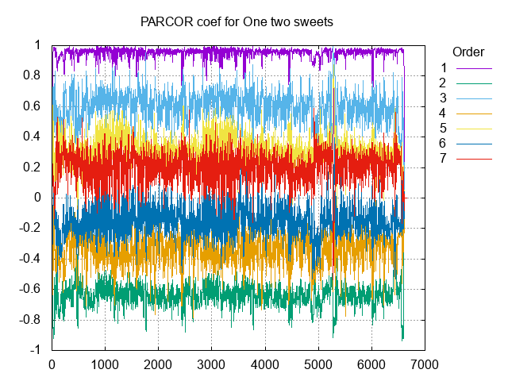
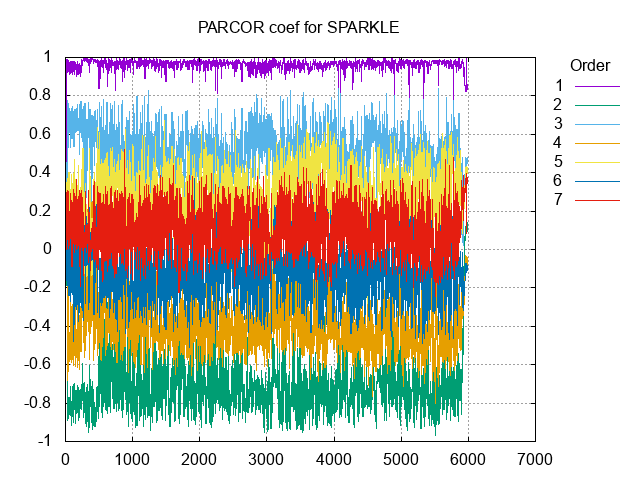
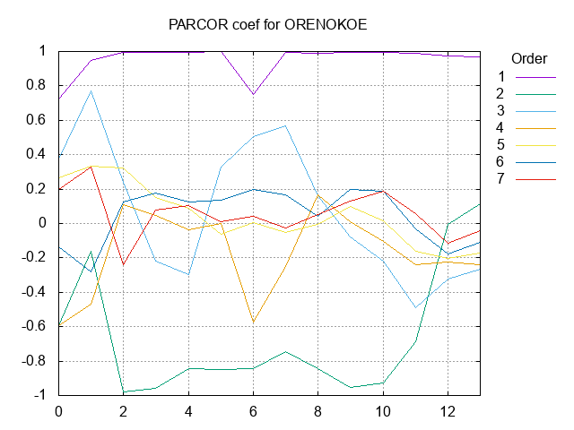
見れること
- 1次成分は1の近傍になる
- 2次成分は-1の近傍になるが、偏りは1次ほどではない
- 高次になるに従い、ほぼ振動しながら0に近づく。
--
バグを直す。追っていたところ、
- 予測誤差計算時に32bit整数でオーバーフローしていた
- 計算時に一旦64bit整数に受けることで修正。
- 予測誤差先頭出力時に入力wavと同一bit数を超える数値が出ていた（16bit wavで69410を出そうとした）
- 差分は2倍の値域が出るので+1bitして出力することで修正。
2.については、修正できたが先頭を（ゴロム符号化しない）生のビットで出力すること自体細かな最適化にしかなっていないので、一旦先頭を生のビットで出力するのをやめることにした。これにより圧縮率は悪化するが、それほど大きなダメージではない。
圧縮効率を上げるアイデアを挙げると：
- PARCOR係数を非線形量子化する
- 分布を見れば分かるようにPARCOR係数の分布には偏りがある。偏りに合わせて非線形に量子化すれば予測精度が高まる。『音声の高効率符号化』では等ひずみとなるビット数がかなり減ったとのこと。
-
ビット割当ても低次係数には多く割り振る。
-
MS処理を行う
- M = L + R, S = L - R として処理する
-
Mでは逆相関が除去され、Sでは正相関が除去される。
-
無音部でランレングス符号化を使う
- ゴロム符号のパラメータ計算のときに正値化した差分信号の平均を計算する。平均が1より小さければ無音のはず。ランレングスで符号化する。
-
等ビットレート原則が崩れるかも...
-
ロングターム（ピッチ情報）を使う
- ピッチ解析を行い、その長さによる予測符号化を行う。MPEG4-LSで使われている手法。
ロングタームは少し重たそうだけど、他はすぐにやれそう。12/2はPARCOR係数の非線形量子化に取り組む。
2018.12.2
非線形量子化を検証中...しっかしまだ非線形量子化のイメージが掴みきれてない。gnuplotでグラフを出してみる。
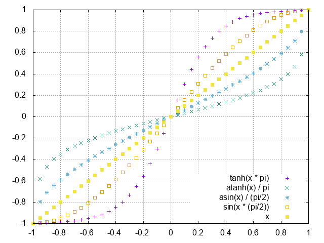
```bash:ソース set samples 41 set xtics 0.2 set ytics 0.2 set grid set xrange[-1:1] set yrange[-1:1] plot tanh(x * pi) w p, atanh(x) / pi w p, asin(x) / (pi/2) w p, sin(x * (pi/2)) w p, x w p
求まった係数値$x \in [-1,1]$に対して、$\tanh^{-1}(x)$を計算すると$-1,1$の近傍で粗くなるようにしか見えない...（それどころか$\tanh^{-1}(1) = +\infty$だし...）もしかして$\tanh(x)$の誤りでは...？
→いや、合ってる。$\tanh^{-1}(x)$で変換をかませると、$0$近傍の値はほとんど同じになる。すなわち近い値が割り当てられやすくなる。逆に$-1,1$近傍では急激に値が変化するから少しの$x$のずれで全く違う値が割り当てられる。即ち$-1,1$近くの情報量が多くなる。
rubyで符号化関数を試作してみた。
```ruby:符号化関数
# f_valは[0,1]の値を期待
def encode(n_bits, f_val)
max = (1 << n_bits) - 1
return max if f_val >= max.to_f / (1 << n_bits)
return ((max * Math::atanh(f_val)) / Math::atanh(max.to_f / (1 << n_bits))).to_i
end
→除算を行っているので桁落ちが無視できない...
1近傍で\(+\infty\)にすっ飛んでるのが危険。\(\tanh(\pi x)\)のテーブルを作っておき、範囲検索で正規化値に該当するインデックスを符号化するのが良さそう。
# テーブル作成
table = Array.new(65536).map!{ 0.0 };
0.upto(65535) {|i| table[i] = Math::tanh(Math::PI * i.to_f / 65536); }
# 符号化関数
def encode(table, f_val)
raise if f_val > 1.0
inx = table.index {|v| v >= f_val }
return (table.size-1) if inx.nil?
return inx
end
# 復号関数
def decode(table, code)
return 1.0 if code >= table.size
return table[code]
end
\(1\)近傍で取りこぼした（区間\([65535/65536,1.0]\)の値）値が多いけど、これは量子化故仕方がないよな...？
```ruby:符号化値の密度 irb(main):294:0> 0.upto(10) {|v| puts "#{v.to_f/10}- #{encode(table, v.to_f / 10)}" } 0.0- 0 0.1- 2094 0.2- 4230 0.3- 6457 0.4- 8838 0.5- 11459 0.6- 14460 0.7- 18093 0.8- 22918 0.9- 30712 1.0- 65535
0.9から1.0の間に約35000個割り当てていることが分かる。
さて、C言語での実装を考える。標準ライブラリ関数の`tanh`はプラットフォーム依存でどんな結果を返すか分からないので、自前で`tanh`を実装したい。自前`tanh`は奥村先生の「標準アルゴリズム辞典」を参考にしようと思ったが、実装内部で`exp`を使っているので結局プラットフォーム依存であることを免れない。
やはりテイラー展開を使うしか...いや$0$近傍以外での誤差がやばいし。
悩んだところ、`tanh`の返す値が$1/65536\approx 1.526 \times 10^{-6}$より大きな誤差となるプラットフォームは少ないと考え、ナイーブに`tanh`でテーブルを作ることにした。
`tanh`の$-1,1$付近の誤差がでかいことに悩んでたら、`tanh`ってそもそもシグモイド関数と同じように$-1,1$に漸近するするだけで通過しないことに気づいた。それじゃだめだ。変換関数を再検討。必ず$(-1,-1), (1,1)$を通るようにしたい。
### 2018.12.4
悩んでいたら、良いページがあった
- [その19 補間関数あれこれ](http://marupeke296.com/TIPS_No19_interpolation.html)
結論、以下の曲線で決まり。$a$をパラメータとして、
$$
t(x) = \frac{1}{2} \left[ 1 + \frac{1 - \exp(-ax)}{1 + \exp(-ax)}\frac{1 + \exp(-a)}{1 - \exp(-a)}\right] \\
y(x) = 2t^{2}(x)(3 - 2t(x)) - 1
$$

aは3か4かなあ。→-1,1の近傍で32bit数値に差が出る3.0を採用。極端だから2.0に訂正。（2018.12.4）
テーブル引きによる非線形変換を使うために、PARCOR係数の計算実装を見ているが、固定シフト`PARCOR_COEF_FIXED_SHIFT`が15よりも大きいと戻らない現象を観察している。これは多分16bit値を15bitよりも大きく左シフトすると32bit値として表現できないから...。
フィルタ計算のときには64bit値で持つ必要があるかも。
### 2018.12.4
係数シフト量`PARCOR_COEF_FIXED_SHIFT`を大きくする修正。大きくして戻らなくなった原因はPARCOR係数の出力ビット数。今までは16bitで出していたが、それでは15bit(+符号1bit)までしか記録できない。
修正して様子を見たところ5分尺データの圧縮率が改善した。（逆に短いデータでは悪化）。これはPARCOR係数の精度改善とその保存コストのトレードオフだろう。
非線形変換しようとしているが足踏み。テーブル引きにすることを考えると、`PARCOR_COEF_FIXED_SHIFT`ビットサイズのテーブルを保存する必要がある...。31bitだと超巨大になる。
これに対するアイデアは、16bitで記録するけど、テーブルによって32bit値に拡張（補完）するというもの。（非線形変換しないときは線形補間；単純な左シフト）だから記録に使うビット幅(16bit)と計算時にシフトする量(31bit)に違いが出る。というかこれしかいい方法がなさそうに見える。
テーブル引きによる方法と、生の31bit保存でどちらが圧縮率が良いかは検証する必要がある。
### 2018.12.5
非線形テーブル対応。効果あり。
```:非線形テーブル
-rw-r--r--@ 1 * staff 54344 Dec 6 00:05 kisaragi_chihaya.sol
-rw-r--r--@ 1 * staff 33292840 Dec 6 00:07 SPARKLE.sol
-rw-r--r--@ 1 * staff 42188584 Dec 6 00:05 one_two_sweets_offvocal.sol
早速単純な31bitシフト時と比較する。結果、非線形テーブルの方が良い結果：
```:単純な31bitシフト -rw-r--r--@ 1 * staff 54653 Dec 6 00:17 kisaragi_chihaya.sol -rw-r--r--@ 1 * staff 33424610 Dec 6 00:16 SPARKLE.sol -rw-r--r--@ 1 * staff 42335099 Dec 6 00:17 one_two_sweets_offvocal.sol
最初に算出されるPARCOR係数が`float`精度なのがまだ気になる。。→取り急ぎ`double`に変えたけどさしたる変化なし（それどころかSPARKLE.wavは1バイト増えた...）。もしかして[-1,1]の`float`は情報が落ちないのか？でも、精度的には嘘がないので今後は`double`でいく。
次はMS処理、もしくはランレングス？MS処理は劇的に効きそう。
### 2018.12.16
本日はMS処理を入れてみる。これで数MBは削れてほしい…。MS処理はブロック毎に変えることはしない。全体で同一の処理方式を取るようにする。ヘッダに修正が入る：
#### SolAヘッダ
| サイズ(bits) | 内容 | 補足 |
|--:|:-:|:-:|
| 32 | シグネチャ `"SolA"` | Soleil Aikatsuの略（Sound of lossless Audioの略） |
| 32 | 一番最初のデータブロックまでのオフセット（自分除く） | 240bit = 30byteSのはず |
| 16 | フォーマットバージョン番号 | 4 |
| 8 | チャンネル数 | 足りるでしょ…（怠慢） |
| 32 | 全サンプル数 | 足りるでしょ…（怠慢） |
| 32 | サンプリングレート | 足りるでしょ…（怠慢） |
| 8 | 1サンプルあたりのビット数 | wavへの復元で必要 |
| 8 | PARCOR係数次数 | 全ブロックで同一 |
| 4 | チャンネル毎の処理方法 | 今は何もしないか、MS処理するかのどちらか |
| 32 | SolAブロック数 | |
| 32 | SolAブロックあたりの最大サンプル数 | 等ビットレート実現のため末尾以外は最大サンプル数に揃える。 |
| 32 | ヘッダ以降のCRC32値 | |
| 32 | ヘッダのCRC32値（自分除く） | |
やった…が速報で結果が渋い…。ロスレスになったら結果をば…。
と思ったら元に戻らず、ハマる。間違いなくどこかでクリップしているのが原因だが、根本原因が追えず。これからピアノ。
### 2018.12.19
MSを使ったときに戻らない原因を調査。簡単なループのミスだった。。。（Sideが決まる前に出力計算していた）
ロスレスになったけどいかんせん**圧縮率が悪化**。理由はMidをL+Rで作っているからでダイナミックレンジが広がって結果誤差増大につながったものと思われる。
対応は、wavpackが如く、`Mid=(L+R)/2`とする。これにより最下位1bitの情報が落ちるが、`Side=L-R`の結果から、`Side`の最下位1bitが`Mid`の最下位1bitと一致することを用いてもとに戻せる。次はこれを試す。
後、高次のPARCOR係数も非線形量子化したい。
### 2018.12.22
秋葉原製作所なるところで作業してみる。3時間で1250円。
MS処理をうまくやるのが今日の目標。
`M=(L+R)/2`としたときにどうしても戻らなく、苦戦していた。flacのエンコーダソースを見ていたところ、全てをシフト演算でやりきっていたので真似をしたら何と元に戻った。**原因は除算による0方向の丸め**。
```c:flacエンコーダのMS処理
for(i = encoder->private_->current_sample_number; i <= blocksize && j < samples; i++, j++) {
encoder->private_->integer_signal[0][i] = mid = side = buffer[k++];
x = buffer[k++];
encoder->private_->integer_signal[1][i] = x;
mid += x;
side -= x;
mid >>= 1; /* NOTE: not the same as 'mid = (left + right) / 2' ! */
encoder->private_->integer_signal_mid_side[1][i] = side;
encoder->private_->integer_signal_mid_side[0][i] = mid;
}
NOTE:に注目。実例で行くと、L=-741, R=322, M=L+R=-419のとき、(L+R)/2=-209だが(L+R)>>1=-210。0xFFFFFE5D(-419) >> 1 = 0xFFFFFF2E(-210)となるから、下位1bitをSideから補えば元に戻る！
特に著しいのはL+R=-1のときで、(-1>>1)=-1だからMの符号の情報が飛ばないのがうまくいく理由。単純な除算だと(L+R)/2=0のときにMの符号が分からなくなってしまう。
早速修正を取り入れる：
```sh:MS処理追加 -rw-r--r--@ 1 * staff 41939426 Dec 22 18:02 one_two_sweets_offvocal.sol -rw-r--r--@ 1 * staff 32534982 Dec 22 18:04 SPARKLE.sol
数百KB単位の削減になった。
### 2018.12.27
ロスレス音声ではLSPが気になる。試すだけはしてみないと。
### 2019.1.2
実家でLSP係数の計算を試している。と言っても理論抜きでLPC係数からLSP係数に変換するのを試している。
LSP係数は多項式P,Qの根を求めることで得ている。ここではDFTした結果のゼロ点を探すことでLSP係数を求めている。
LPC <-> LSPの相互変換はできた感じ。しかしワーク領域がでかい（FFT使うから）ため、変換用ハンドルを新しく作った。
さて、これからやりたいことを列挙すると次のようになる：
- 窓を試す
- LPC, PARCOR係数を求める際に窓をかけてから処理を行う。
- 解析精度が上がることで誤差が減るかも。
- 高次係数も非線形量子化する
- ゴロム符号パラメータをサンプル単位で変える
- wavpackではこちらの方式でやっている。試す価値はある。
- LSP係数で保存する
- LSP係数は誤差の感度が低く、PARCOR係数と比べて等ビットレートでより良い音質を実現しているとの報告がある。
- LSPの前向き誤差計算は複雑なので却下。ここでは、LSP係数<->LPC係数の相互変換を使って、係数保存の際にLSP係数を使用することを考える。
- 無音部でランレングス符号化を使う
- ゴロム符号のパラメータ計算のときに正値化した差分信号の平均を計算する。平均が1より小さければ無音のはず。ランレングスで符号化する。
- 等ビットレート原則が崩れるかも...
- ロングターム（ピッチ情報）を使う
- ピッチ解析を行い、その長さによる予測符号化を行う。MPEG4-LSで使われている手法。
### 2019.1.5
本日はいつもの海沿いベローチェで作業。窓掛けを試すのと、LPCモジュールの出力一致確認をおこなうテストを追加したい。
窓掛け…簡単にハン窓で試したら効果あり！
-rw-r--r--@ 1 * staff 41586969 Jan 5 15:38 one_two_sweets_offvocal.sol -rw-r--r--@ 1 * staff 31990780 Jan 5 15:39 SPARKLE.sol -rw-r--r--@ 1 * staff 54991 Jan 5 15:44 kisaragi_chihaya.sol
ブラックマン窓の結果は以下。ハン窓より軒並み悪い。
-rw-r--r--@ 1 * staff 41595943 Jan 5 15:49 one_two_sweets_offvocal.sol -rw-r--r--@ 1 * staff 32015488 Jan 5 15:50 SPARKLE.sol -rw-r--r--@ 1 * staff 55317 Jan 5 15:50 kisaragi_chihaya.sol
再び数百KBの削減（短い音声では増加...）。結果をまとめると：
| 窓の種類 | ワン・ツー・スウィーツ | SPARKLE | 俺の声 |
|--:|--:|--:|--:|
| 矩形窓（窓なし） | 41939426 | 32534982 | 54345 |
| ハン窓 | 41586969 | 31990780 | 54991 |
| ブラックマン窓 | 41595943 | 32015488 | 55317 |
| サイン窓 | 41575639 | 31957294 | 54468 |
| Vorbis窓 | 41580579 | 31975238 | 54785 |
サイン窓を採用する。Princen-Bradley条件（完全再構成条件）を満たす窓が良いのか？
テスト書こうと思ったけど時間が中途半端（19:00閉店で今17:42）。PARCORの高次係数の非線形量子化を検討する。
単純には低次非線形量子化関数の逆関数でいいかなと思ったけど、非常に複雑になりそうだったから一旦やめて、単純な関数から見る。
- ロジット関数：ロジスティックシグモイド関数の逆関数。$f(x) = \log(x) - \log(1-x)$
余談：その後プレエンファシスを試すも性能悪化。
-rw-r--r--@ 1 * staff 47930310 Jan 5 22:49 one_two_sweets_offvocal.sol -rw-r--r--@ 1 * staff 36947366 Jan 5 22:54 SPARKLE.sol -rw-r--r--@ 1 * staff 65086 Jan 5 22:59 kisaragi_chihaya.sol
### 2019.1.8
高次成分の非線形量子化を試みる。変換曲線は、ロジット関数をベースに、必ず$(-1,-1), (1,1)$を通過する曲線を作る。作り方は、まず$2 * sigmoid(x) - 1$として値域を$(-1,1)$に制限してから、$sigmoid(1)$で割ることで$(-1,-1), (1,1)$を通過するようになる。この関数は$a$をパラメータ、$B=\frac{1 + \exp(-a)}{1 - \exp(-a)}$として、$y = B \frac{1 - \exp(-ax)}{1 + \exp(-ax)}$。これを$x$について解けば、得られた曲線式は、$y = \frac{1}{a} \left\{ \log(B + x) - \log(B - x) \right}$。
いろんな$a$に対してグラフを書いてみると：

a=4,5,6あたりが狙い目？ひとまず5で様子見。
### 2019.1.9
高次成分もロジット関数で非線形量子化したけど...効果が限りなく薄いどころか効率悪化も見られた...
-rw-r--r--@ 1 * staff 41575637 Jan 10 00:34 one_two_sweets_offvocal.sol -rw-r--r--@ 1 * staff 31957302 Jan 10 00:34 SPARKLE.sol -rw-r--r--@ 1 * staff 54469 Jan 10 00:35 kisaragi_chihaya.sol
そもそも、高次成分も精度良く記録する方針が間違ってる？低次成分に多くのビットを割り当てた方が良い方針かも。一旦高次の非線形量子化は取り下げる。
### 2019.1.10
低次係数に32bitを割り当ててみる。...書いていて思ったが、そろそろ圧縮の検証（元に戻るか？+圧縮率計測）プログラムを作るべきかも。
32bitの結果...**悪化。**
-rw-r--r--@ 1 * staff 41615559 Jan 10 23:02 one_two_sweets_offvocal.sol -rw-r--r--@ 1 * staff 31993291 Jan 10 23:06 SPARKLE.sol -rw-r--r--@ 1 * staff 54554 Jan 10 23:08 kisaragi_chihaya.sol
厳しい。ビット割当の試作は一旦置いておく...。
ゴロム符号のパラメータをサンプル単位で切り替える対応をやってみる。更新式はwavpackのものをぱくって、以下のようにした。
```c:パラメータ更新+エンコード
/* 各チャンネルごとにゴロム符号化 */
for (ch = 0; ch < num_channels; ch++) {
uint32_t golomb_param = golomb_m[ch];
uint32_t res_code;
for (smpl = 0; smpl < num_encode_samples; smpl++) {
res_code = SINT32_TO_UINT32(residual[ch][smpl]);
Golomb_PutCode(strm, golomb_param, res_code);
if (res_code >= golomb_param) {
golomb_param += (golomb_param + 127) >> 7;
} else {
golomb_param -= (golomb_param + 126) >> 7;
}
}
}
（wavpackでは、更に急激な誤差変動対策が入っている。連続した1は15個までしか続かないようになっている。それ以上はElias符号化する。）
すると、やはりというか…性能改善。長い音源で500KBくらい減っているし、短い音源でも効果あり。 FLACとかMonkey's Audioの適応式も見てみたい。後少し気になったのが符号付き整数を符号なしに変換する式。偶数が正で奇数が負の式だけど、もしかしたら幾何分布に従ってないかもしれない。上手く変換すれば減りそう...というか、符号ビット+絶対値（負数は+1して符号反転すると◎。wavpackに書いてあった）の方が絶対値の頻度的に有利かも。
2019.1.11
ワン・ツー・スウィーツの1ch目の500000-550000サンプルにおける符号の頻度を調べてみた。
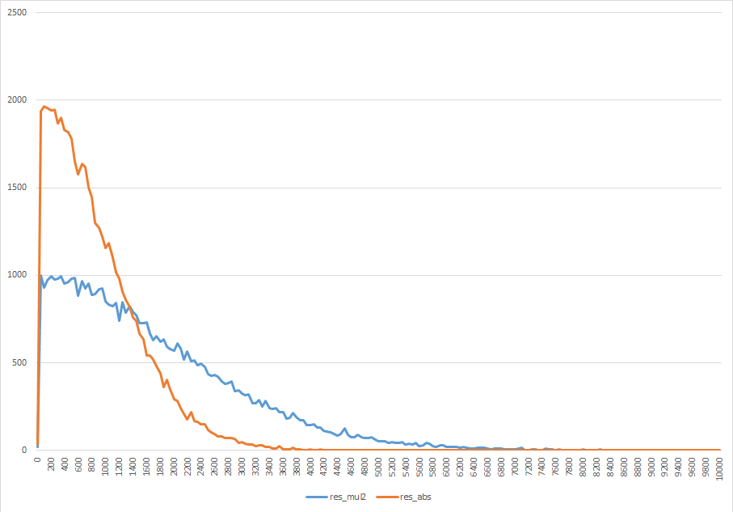
青線は偶数を正、奇数を負とする変換、橙線は絶対値（負数は+1して符号反転）して得られた分布。橙が有利なのは以下の点で明らかだろう：
- 小さい値の頻度が高い
- より幾何分布に近い
これに符号ビットを1bit付加しても、おそらく効率よく圧縮できるだろう。3連休はこれを試す。
...やっつけで、符号1bit+絶対値でやってみたのだが、増加...
-rw-r--r--@ 1 * staff 41280406 Jan 12 00:28 one_two_sweets_offvocal.sol
-rw-r--r--@ 1 * staff 31399579 Jan 12 00:28 SPARKLE.sol
-rw-r--r--@ 1 * staff 53348 Jan 12 00:29 kisaragi_chihaya.sol
符号bitの1bitが馬鹿にならないかも。ワン・ツー・スウィーツは2x13641600=27283200サンプルあるが、全てに符号bitをつけると27283200bit = 3410400byte。約3.4MBが符号ビットになっているので、符号ビットの圧縮が次？2値符号化だからランレングスする？ 符号ビットを抜いたら37870006バイトで整合性あり。
TODO:
- 符号ビットのランレングス？符号化
- 上のグラフから分かると思うけど、絶対値のピークは0でないことがわかっている（→大嘘。ヒストグラムの作り方を間違っていて0が抜けていた。0にピークがある。）。ピークを0にシフトして符号化する。シフトして負になる部分は別の符号を使う。
2019.1.12
符号ビットの圧縮を試す。ランレングス的に、符号の切り替わりのときだけ1を出力するようにしてみる。そうすることで確実に減る（減らないのは正負が交互に出るときだけ）。
すると、flacを超え、当初の目的であるワン・ツー・スウィーツ40MBを切った。
-rw-r--r--@ 1 * staff 39463779 Jan 12 15:39 one_two_sweets_offvocal.sol
-rw-r--r--@ 1 * staff 29681677 Jan 12 15:40 SPARKLE.sol
-rw-r--r--@ 1 * staff 50121 Jan 12 15:42 kisaragi_chihaya.sol
短い素材についてはMonkey's Audioを超えている。また、符号ビットはワン・ツー・スウィーツで1593773byteになっており半分以下になっている。
復号ができればいけるが、ゴロム符号に上記のビット列を入れたときにどうするか...。ゴロム符号前半のunary符号部分で切り替わりを表現する？
考えたが、どうやってもunary符号部分が不定な0の連続になっているので、切り替わりの1を挟む余地が無いことに気付いた。PackBits的にやらざるを得ない...やったら増えた。最大ランレングス長を3としたPackBitsでこんな感じ。
-rw-r--r--@ 1 * staff 42793987 Jan 12 17:50 one_two_sweets_offvocal.sol
-rw-r--r--@ 1 * staff 32595117 Jan 12 17:50 SPARKLE.sol
-rw-r--r--@ 1 * staff 55704 Jan 12 17:49 kisaragi_chihaya.sol
うーん、厳しい。ゴロム符号のアレンジでなんとかならないか...
困ってMonkey Audioのソースを見る...と、レンジコーダ使っていることに気づく。それじゃあデコードが遅いではないか...。
2019.1.13
wavpackの論文を読んだら以下の示唆があった。
- 中央値の更新式
- 固定小数を使うことで平滑化し小さい値でのジャンプを防ぐ。
- 今の中央値の更新式は最適か？検討が必要。
- Recursive Golomb Coding
- エンコード値のunary部が2より長い（現在の中央値を超えた）場合は、エンコード値から中央値を引いてこれを新しい中央値としてゴロム符号化する。新しい中央値も適応的に変える。
- これは減りそう...
Recursive Golomb Codingの手順：
- パラメータ配列
m[MAX_QUOT]を用意 - 符号ビットを1bit出力
abs <- 絶対値quot <- abs / mquotをunary符号出力for q 0 to MAX_QUOTif (abs < m[q] or q >= MAX_QUOT) breakabs <- abs - m[q]end forabs % m[quot]をゴロム符号と同様に出力mの更新
中央値の更新式を固定小数化することで微減。
-rw-r--r--@ 1 * staff 41276050 Jan 14 00:23 one_two_sweets_offvocal.sol
-rw-r--r--@ 1 * staff 31390861 Jan 14 00:23 SPARKLE.sol
-rw-r--r--@ 1 * staff 53282 Jan 14 00:23 kisaragi_chihaya.sol
wavpackでは4bitを小数部に使っている。自分は12bitを割り当てている。4bitの方が追従が良く、よい結果を出している感触があるが、精度重視で12bitにしてみた。
（記憶に行き違いがないか、念の為記録）符号bit+絶対値ではなく、偶数を正に、奇数を負に割り当てる方針で行くと、以下のように微増する：
-rw-r--r--@ 1 * staff 41349156 Jan 14 02:24 one_two_sweets_offvocal.sol
-rw-r--r--@ 1 * staff 31557247 Jan 14 02:26 SPARKLE.sol
-rw-r--r--@ 1 * staff 53354 Jan 14 02:26 kisaragi_chihaya.sol
2019.1.14
符号ビットはランレングスで圧縮できそうだという信念の元、ランの長さをγ符号あたりで符号化することを検討中。
色々ガチャガチャやり始める前にランの長さの統計を取る。
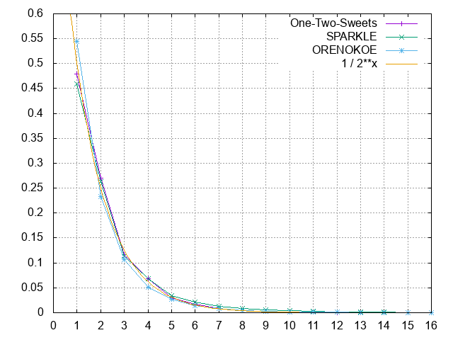
これ、1/(2^x)と比較すれば分かるが、一様乱数列のランレングスでは...
（ランの長さnは同一符号がn連続していることを示す。ランの長さ1は連続していないことを示す。）
さらに平均ラン長を計算してみると…（長さ64以上のランは除外）
| 入力音声 | 平均ラン長 |
|---|---|
| ワン・ツー・スウィーツ | 2.055 |
| SPARKLE | 2.260 |
| 俺の声 | 1.976 |
約2。これは何を意味するか...
これによると、一様乱数列の平均に一致している…。
γ符号の実装に2時間ほど持ってかれる...GetBitsの引数が64bitで型が合わずメモリ破壊を起こしていた。
実装できてランレングスをγ符号で出すようにした。が、増加...
-rw-r--r--@ 1 * staff 41783849 Jan 14 17:41 one_two_sweets_offvocal.sol
-rw-r--r--@ 1 * staff 31753911 Jan 14 17:41 SPARKLE.sol
-rw-r--r--@ 1 * staff 54026 Jan 14 17:41 kisaragi_chihaya.sol
うむ、厳しい。いや、長すぎるランを出している可能性がある。その回避を打ってから次を考える。
悲しくなってナイーブに符号ビット0,1の頻度を計測したら僅かながら偏りがあった。 さらに2bitパターンにしたら更に偏りが大きくなった。
早速8bitパターン化して頻度を見たところ、音源に依存せず現れないパターンを観測した。（どうしてその様なパターンが表れるのかは謎。あとグラフは中心で対称になっていないか？）
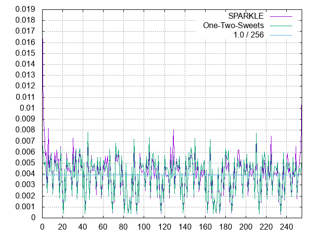
8bit使ったときのエントロピーは以下：
| 音源 | 8bit符号ビットパターンのエントロピー | |--:|--:|--:| | ワン・ツー・スウィーツ | 7.827755 | | SPARKLE | 7.772168 | | 俺の声 | 7.752156 |
ハフマン等で上手く割り当てれば3%くらい減らせる余地がある。費用対効果的にきついか？これは最後の手段として取っておこう。先に、効果の有りそうなRecursive Golomb Codingに手を出す。
2019.1.15
Recursive Golomb Codingに実装着手。アルゴリズムを紙に書いて終わり。
2019.1.16
Recursive Golomb Codingのテストを書きながら実装中。大阪行きながら実装できるとベストだが…大阪で実装する余裕はあるだろうか。大阪にはルベグ積分だけ持っていこう。
2019.1.17
Recursive Golomb Coding実装...と行きたいけど寄り道。
shotenの論文を読んでたら、ゴロム符号の商部分はアルファ符号よりもガンマ符号で出したほうが良いとの記述あり。早速試してみたがサイズ増加。ガンマ符号の実装が誤っている可能性がまだあるため、あとで再度検証したい。
また、shotenではまず入力データから平均を差っ引くというのを見た。これはもしかしたらLPC解析時に効くかもしれないと思って、窓掛け前に平均除去を入れてみた。結果はさしたる変化なし。（増えるケースもあった） 念の為窓掛け後に平均除去を入れたら、窓掛け後のほうが性能が良かった。
| 音源 | 変更前 | 窓掛け前に平均 | 窓掛け後に平均 |
|---|---|---|---|
| ワン・ツー・スウィーツ | 41276050 | 41275937 | 41275904 |
| SPARKLE | 31390861 | 31392892 | 31391996 |
| 俺の声 | 53282 | 53283 | 53282 |
FLACの実装を見ているとテューキー窓を使用していた。試す価値はあるかもしれない。
次数を増やしたら1MB近くの減少が観測された。その際に自己相関計算時のバグが見られたので修正（float同士の乗算により精度が落ち、PARCOR係数の絶対値が1よりも大きくなった。もっと言うとwavからデータを取るときにdoubleにすべき。）。またブロックサイズを変更することでかなりのパフォーマンス差が見られた。…しかしこれらは最後の手段。高次のPARCOR係数の傾向を見ておくのは良いことかも。
全く集中できなくてネットをウロウロしていたらexp-golomb符号（Elias-Teuhola符号）が目に止まった。H.264に使われているらしい。
中央値の逐次計算手法：
そして、依然として絶対値+符号ビットじゃなくて正を偶数、負を奇数に割り当てた方が圧縮率が良い...。一体どういうことだろうか。符号ビットも混ぜて符号化できるから効率が良い？
一旦立ち返って符号語の分布を見てみるべきかも。幾何分布の尤度を計算して当てはまりを見るのも良い。
-rw-r--r--@ 1 * staff 41242708 Jan 18 01:05 one_two_sweets_offvocal.sol
-rw-r--r--@ 1 * staff 31367692 Jan 18 01:06 SPARKLE.sol
-rw-r--r--@ 1 * staff 53246 Jan 18 01:06 kisaragi_chihaya.sol
最適なゴロム符号パラメータの決定法の資料があったぞ...
2018.1.18
1時間ほど作業ができるので誤差分布の統計を取る。
まずは符号語の分布。
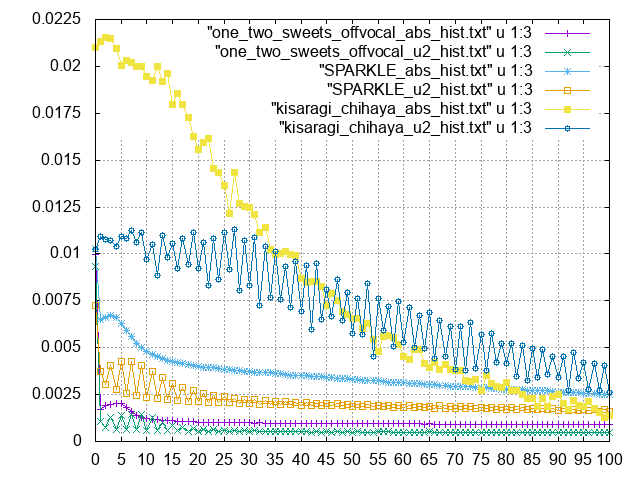
u2が正を偶数、奇を負とする符号語、absが絶対値…ってなんだこりゃ。正負で分布が違うように見えるのだが。
正負が非対称になっている可能性があるので、誤差のヒストグラムをそのまま出したところ…
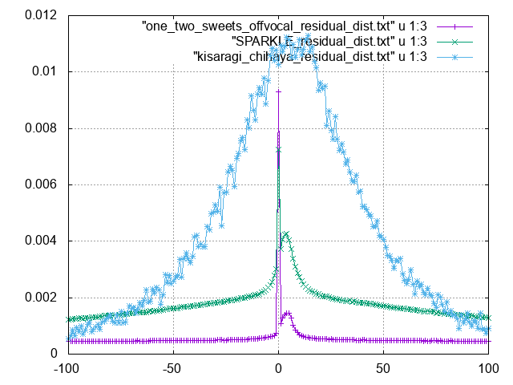
0は最頻値（俺の声では最頻値すらずれている）だけど、平均がずれて存在している…？どういうこと？予測の間違い？
2018.1.20
秋葉原製作所。平均がずれているのはかなりクリティカルだと思っている。PARCOR係数の次数を変えて観察してみる。音源はSPARKLE（上のグラフで山がわかりやすかったから）
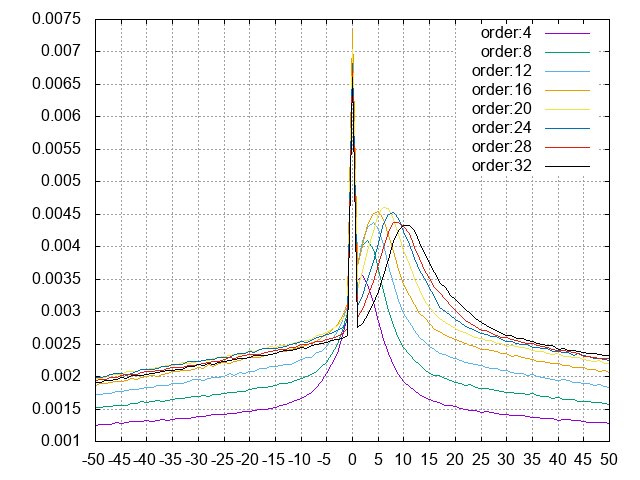
0がピークであることは変わりない。次数を増やすと山が正側に動いていく。差分生成のときに引き残しが発生している？実装を調査。
SPARKLEに対して整数版の関数を使用すると、確かに正にずれているのが確認できる。
residual sum:107071606 count:24540160
というか、和が減る瞬間がない。。。次数10のときの誤差の和をグラフにすると、
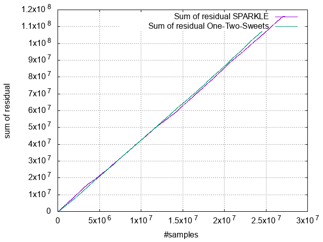
傾きを見れば分かるが、サンプル当り平均4の正の誤差が出ている。グラフを見るにどうもこれは音源に依存しないようだ。
浮動小数点版の予測関数を使い、誤差の和と平均を取った。これでも正にずれている。
residual sum:7.148294 sum(fix32):15350843823 count:24540160 mean:0.000000 mean(fix32):625
気になったのは係数の非線形量子化。非線形量子化して再度floatに戻すと誤差が出るのでは？と思い誤差の和を計測したら、誤差は正で（仕様。必ず大きい方に割り当てているから）和を取ると結構シャレにならない大きさになっていた。（SPARKLE, 次数10）
err_sum:1.306255e-01
2分探索で無条件にtable[index] <= valを満たす値を割り振るのではなく、table[index+1]の方が近ければそちらを割り振るように修正したところ誤差値は改善（誤差分布にさしたる変化なし）：
err_sum:-6.461394e-02
根本的にズレを直すにはアルゴリズムを見直すしか無い？
実装を次のように、係数の符号を反転して計算してみると山が反転...アルゴリズムに問題ありなのは間違いなさそう。
/* 前向き誤差計算 */
for (ord = 1; ord < order + 1; ord++) {
int32_t gamma = -parcor_coef[ord];
mul_temp = (gamma * backward_residual[ord - 1]) >> coef_quantize_shift;
forward_residual[ord] = forward_residual[ord - 1] + mul_temp;
// mul_temp = (parcor_coef[ord] * backward_residual[ord - 1]) >> coef_quantize_shift;
// forward_residual[ord] = forward_residual[ord - 1] - mul_temp;
assert(forward_residual[ord] <= INT32_MAX);
assert(forward_residual[ord] >= INT32_MIN);
}
/* 後ろ向き誤差計算 */
for (ord = order; ord > 0; ord--) {
int32_t gamma = -parcor_coef[ord];
mul_temp = (gamma * forward_residual[ord - 1]) >> coef_quantize_shift;
backward_residual[ord] = backward_residual[ord - 1] + mul_temp;
// mul_temp = (parcor_coef[ord] * forward_residual[ord - 1]) >> coef_quantize_shift;
// backward_residual[ord] = backward_residual[ord - 1] - mul_temp;
assert(backward_residual[ord] <= INT32_MAX);
assert(backward_residual[ord] >= INT32_MIN);
}
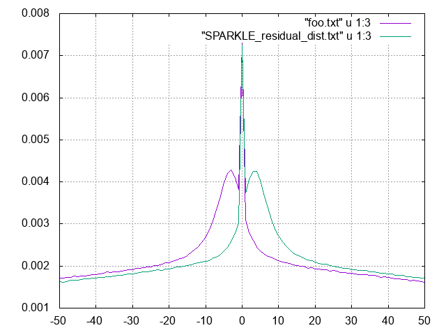
入力データとしては16bit幅しか無いデータを入れているので、固定小数的に怪しい（小数部の余裕がない）と思い、入力データの左16bitシフトを入れた：
/* 誤差計算 */
for (samp = 0; samp < num_samples; samp++) {
/* 格子型フィルタにデータ入力 */
forward_residual[0] = (int64_t)data[samp] << 16;
/* 前向き誤差計算 */
for (ord = 1; ord < order + 1; ord++) {
mul_temp = (parcor_coef[ord] * backward_residual[ord - 1]) >> coef_quantize_shift;
forward_residual[ord] = forward_residual[ord - 1] - mul_temp;
assert((forward_residual[ord] >> 16) <= INT32_MAX);
assert((forward_residual[ord] >> 16) >= INT32_MIN);
}
/* 後ろ向き誤差計算 */
for (ord = order; ord > 0; ord--) {
mul_temp = (parcor_coef[ord] * forward_residual[ord - 1]) >> coef_quantize_shift;
backward_residual[ord] = backward_residual[ord - 1] - mul_temp;
assert((backward_residual[ord] >> 16) <= INT32_MAX);
assert((backward_residual[ord] >> 16) >= INT32_MIN);
}
/* 後ろ向き誤差計算部にデータ入力 */
backward_residual[0] = (int64_t)data[samp] << 16;
/* 残差信号 */
assert((forward_residual[order] >> 16) <= INT32_MAX);
assert((forward_residual[order] >> 16) >= INT32_MIN);
residual[samp] = (int32_t)(forward_residual[order] >> 16);
}
分布はほぼ対称になり、0の頻度が向上。が、裾の減衰が遅くなって音源依存で圧縮率が悪化した。（SPARKLEは改善、ワン・ツー・スウィーツは悪化）
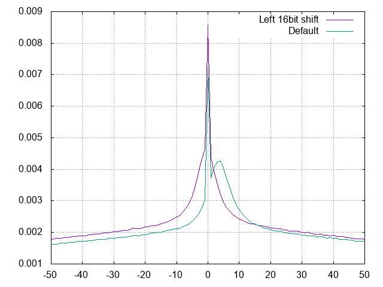
固定小数の扱いがまずそう。丸めを忘れている：
丸めを入れたところ、山のピークは0に近づいた。微妙にサイズは増加。
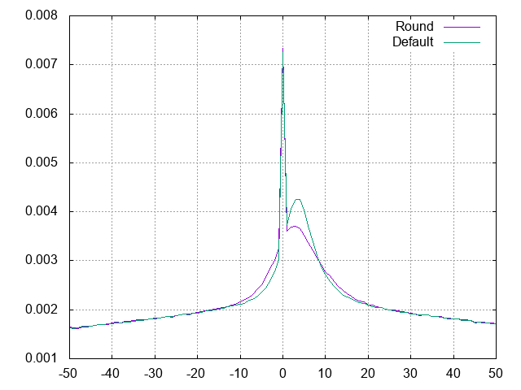
丸め+16bitシフトではSPARKLE、ワン・ツー・スウィーツ共に30KBほどサイズ減少。
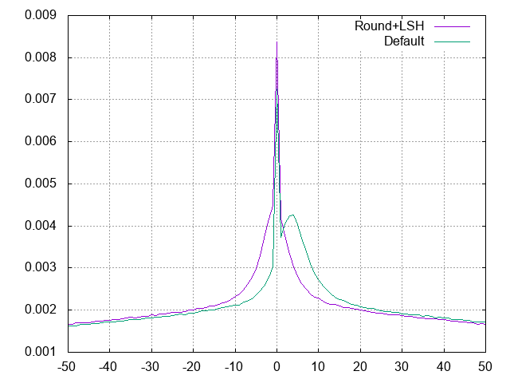
-rw-r--r--@ 1 * staff 41219742 Jan 21 01:23 one_two_sweets_offvocal.sol
-rw-r--r--@ 1 * staff 31336925 Jan 21 01:19 SPARKLE.sol
-rw-r--r--@ 1 * staff 53089 Jan 21 01:24 kisaragi_chihaya.sol
もう一度誤差平均を見てみよう。
2019.1.22
先輩社員のアドバイスにより、16bit左シフトは必須であることが分かった。小数点が揃わず意図しない計算になっていた。間違いをなくすために32bit固定小数点型を使うべきとも。
今一度誤差平均を計算してみる。
| 音源 | 誤差平均 |
|---|---|
| ワン・ツー・スウィーツ | -0.455 |
| SPARKLE | -0.474 |
| 俺の声 | -0.442 |
2019.1.23
そして、整数版LPC予測合成関数で、データの固定小数ビット幅を可変にできるようにしているが、テストが失敗している…。修復には時間がかかりそう。
2019.1.24
FLACのエンコーディングオプションを見ると-rでライス符号の分割数を決めている。これはwavpackの再帰的ゴロムと同義では？
帰りが遅くなり何も手が付かない…昨日との落差がありすぎてつらい…。
で、気付いたのだけど32bit整数だと最大INT32_MAX - INT32_MINの誤差が出るはずで、それは32bit整数では表現できない。だから、表現する固定小数ビット数を30bitに、整数ビット数を2bitに妥協することにした。
2019.1.26
ピアノもコーデックも進まなかったが、ようやく自由になる。
LPCのライス符号の分割は、網羅探索のことだった。指定した最小分割数から最大分割数でライス符号パラメータを変更してエンコードし、最もサイズが小さくなった分割を採用する、というもの。エンコード速度は犠牲になるけど、確かにデコード速度は早くなる発想だわ…。
2019.1.27
秋葉原製作所5時間コース。なんとしても今日で直す。 なんとなく起きていることは分かった。
| No. | データbit(整数部, 固定小数部) | 得られた誤差の右シフト量 | 係数bit(整数部, 固定小数部) | 結果 |
|---|---|---|---|---|
| ① | (1,31) | 0 | (1,31) | NG。フィルタ値が[-1.0, 1.0]を超えるケースがある |
| ② | (1,31) >> (32-データのビット幅) | 0 | (1,31) | OK。元に戻る |
| ③ | (1,31) >> (31-データのビット幅) | 0 | (1,31) | OK。元に戻るが、圧縮率が悪い |
| ④ | (1,31) >> (31-データのビット幅) | 1 | (1,31) | NG。②より圧縮率良いが、誤差の最下位ビットが吹っ飛ぶので元に戻らない |
| ⑤ | (1,31) >> (33-データのビット幅) | 0 | (1,31) | NG。④よりさらに圧縮率が良いが、データ側の最下位ビットが吹っ飛ぶので元に戻らない |
これらの結果より、
- 誤差のbit数は入力データのbit吸うと同一である必要がある。
- 誤差を右シフトすると情報が失われる。左シフトすると無駄な情報が増える。
ことが分かるし、②以外の形態にするのは無しという方針で。また、2019.1.20の計算中の左シフトも、誤差記録時に右シフトしたときに情報が失われて、デコード結果が元に戻らないから採用できない。
でも結局誤差分布の偏りは解消されない…。
有力なヒントは、PARCOR係数の符号を反転させると山が反転することだろう。アルゴリズム内になにかの原因があるはず。 →原因が見えてきた。今の演算では32bit精度が求められる状態になっているのでは。32bitの最下位桁のずれがダイレクトに誤差になっている。
また、色々試していて非線形量子化が原因かと思って非線形量子化をやめてみたら、誤差の分布があまり変わらず、しかもなぜか圧縮率が向上した…そんな馬鹿な…。1MB程度の差が出るはずなのに。。。
これで5時間タイムアップ。今の作業項目をまとめるとこんな感じ：
直近のTODO:
- 誤差の分布が非対称になる現象の調査
- 非線形量子化が効いていない原因の調査
- ゴロム符号を再帰的にする
- ゴロム符号のパラメータ決定を変更。→統計論的に最適な \(\log_{e} 2 E[|res|]\) を使う。
- テューキー窓の使用
- 無音部でランレングス符号化を使う
- ゴロム符号のパラメータ計算のときに正値化した差分信号の平均を計算する。平均が1より小さければ無音のはず。ランレングスで符号化する。
-
等ビットレート原則が崩れるかも...
-
ロングターム（ピッチ情報）を使う
- ピッチ解析を行い、その長さによる予測符号化を行う。MPEG4-LSで使われている手法。
帰って、誤差分布のズレがどうしても諦められず追っていた。積和の途中でビット幅を広げるのを試したけど、結局、誤差を右シフトする必要があって情報が落ちてしまう。
で、今は前向き誤差を出すときに減算を重ねた結果正のオフセットが出ていることから、じゃあ丸め分大きくしてやるぜで試したら誤差分布が対称になった。
```c:変更前 / 前向き誤差計算 / for (ord = 1; ord <= order; ord++) { mul_temp = (parcor_coef[ord] * backward_residual[ord - 1]) >> 31; forward_residual[ord] = forward_residual[ord - 1] - mul_temp; }
```c:変更後
/* 前向き誤差計算 */
for (ord = 1; ord <= order; ord++) {
mul_temp = parcor_coef[ord] * backward_residual[ord - 1];
mul_temp = (mul_temp + (1UL << 30)/* 丸めhalf */) >> 31;
forward_residual[ord] = forward_residual[ord - 1] - mul_temp;
}
これが根本原因なのかはまだ分からない…。結果は以下でちゃんと戻ることは確認済み。
-rw-r--r--@ 1 * staff 41216562 Jan 28 01:05 one_two_sweets_offvocal.sol
-rw-r--r--@ 1 * staff 31339500 Jan 28 01:06 SPARKLE.sol
-rw-r--r--@ 1 * staff 53097 Jan 28 01:05 kisaragi_chihaya.sol
分布はこんな感じで、概形としては理想と考えられる。
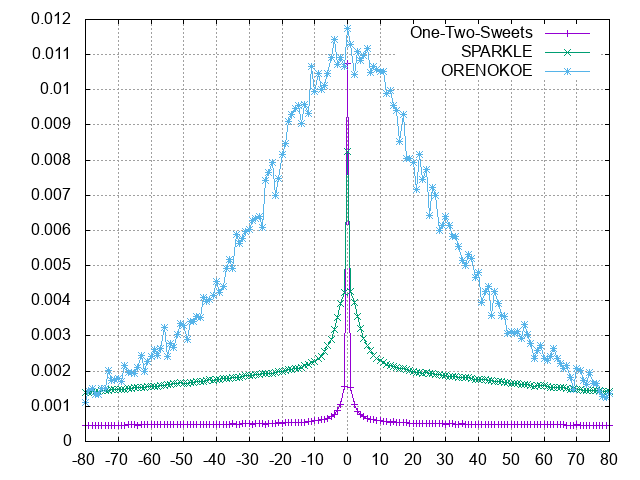
2019.1.28
何故丸めが必要なのか。以下のサイトでは0.5足してからFIRの積和演算をしている。
丸めはどうも加算する方向しかだめなようだ。丸めには色々方法があるらしいが、今回の原因となっていていたのは、
の、
truncate(1.25) = 0x0001 = 1
truncate(1.5) = 0x0001 = 1
truncate(1.75) = 0x0001 = 1
truncate(-1.25) = 0xFFFE = -2
truncate(-1.5) = 0xFFFE = -2
truncate(-1.75) = 0xFFFE = -2
For the positive numbers, the result of truncation is that the fractional part is discarded. The negative number results are more interesting. The result is that the fractional part is lost, and the integer part has been reduced by one. If a series of these numbers had a mean of zero before truncation, then the series would have a mean of less than zero after truncation. Rounding is used to avoid this problem of introduced bias and to make results more accurate.
にあるように、どうも負方向に寄ってしまうのが原因らしい(-1.5の例を注目）。特に3と-3を小数部を2bitとして2bitシフトしてみると、3>>2=0に対して-3>>2=-1。だから右シフトでは-1のオフセットが乗ってしまう。だから小数部で加算することで精度を上げることができていたと想像する。3,-3の場合だと1を加算することになるから、(3+1)>>2=1、(-3+1)>>2=-1だから精度が上がっている。
良い窓関数を探そうとして会社の『音声のディジタル信号処理（下）』を読んでいたら、格子型フィルタのより効率的な構成が見つかった。何でも乗算回数がN回（今2N回）で済むらしい。
- 質問サイト
- Lattice Allpass Structures (Digital Filter Design Toolkit)
- Filter realizations: lattice filter structures
頭にいれるだけ入れておく。
2019.1.29
窓関数をテューキー窓に置き換える前に資料を覗く。
要はテューキー窓は矩形窓に近く、過渡的な信号に強いようだ。
早速0.5を設定して試してみる。うーん。ワン・ツー・スイーツ以外ではサイン窓の方が性能が良い。
-rw-r--r--@ 1 * staff 41214648 Jan 29 22:15 one_two_sweets_offvocal.sol
-rw-r--r--@ 1 * staff 31342212 Jan 29 22:16 SPARKLE.sol
-rw-r--r--@ 1 * staff 53141 Jan 29 22:14 kisaragi_chihaya.sol
ゴロム符号のパラメータを log_{e}2E[|res|] に変えてみると、悪化。
-rw-r--r--@ 1 * staff 41258145 Jan 29 22:53 one_two_sweets_offvocal.sol
-rw-r--r--@ 1 * staff 31420823 Jan 29 22:54 SPARKLE.sol
-rw-r--r--@ 1 * staff 53145 Jan 29 22:54 kisaragi_chihaya.sol
今の手法の方が良かった。
また、改めて符号1bit+絶対値符号すると性能が悪化する。何故？符号bitは実は冗長？
小手先のアイデアは通用しなさそう。さて、再帰的ゴロムの実装に戻ろう。
2019.1.30
FLACのソースを読んでたらLPC乗算時の右シフトは、積和演算の後に行われていた。
/* Here's a slower but clearer version:
for(i = 0; i < data_len; i++) {
sum = 0;
for(j = 0; j < order; j++)
sum += qlp_coeff[j] * data[i-j-1];
residual[i] = data[i] - (sum >> lp_quantization);
}
*/
最後に右シフトするので精度が高いはず。 これはLPCが予測誤差算出と復号を同一のアルゴリズムできるから？PARCORでできない理由があるだろうか。 また個人的には非線形量子化があんまり効いていないように見えるのが引っかかっている。
2019.1.31
再帰的ゴロムの実装。テスト追加しながらやっている。まだ実装途中だが、時間があれなので練る。
2019.2.1
中央値mはE[|X-m|]を最小化することが知られている。適応的に求められないか？ LMSは適応的に求められる手法が良く知られているが、絶対値はそうはいかない。
2019.2.16
再帰的ゴロムが何となく動き始めている。次のように符号を割り当てると考えたらうまく行った：
| 値域 | 符号 |
|---|---|
| 0 <= val < m | 1 (val % m) |
| m <= val < m + m' | 01 ((val - m) % m') |
| m + m' <= val | 001 (((val - (m + m')) をパラメータ(m + m')でゴロム符号出力) |
パラメータの変動を見ていたら、現在値より大きいか小さいかだけで更新値を決めるので追従が遅い。
やっぱり中央値の逐次修正を改善したい。幾何分布の性質に注目すると、p>=0.5では、必ず平均値が中央値よりも小さくなる結果が見えている。下限を平均値、上限を平均+分散の平方根として、どうにか逐次推定できないか？
2019.2.17
再帰的ゴロム符号にテスト追加。また、符号割当をループの形で書き直す。 →OK。良好に動いている。で、パラメータを増やしていくと、増やしただけ良くなっていく傾向が見られる。（当然、大きすぎる値は増加に転じる）
さっそく再帰的ゴロム符号を組み込んだが…結果悪化…。まだ整理しきれてない・あがける部分はありそうなので、一週間粘ってみる。
2019.2.18
再帰的ゴロム符号の実装を修正。修正前は全パラメータの和に達したらパラメータ和のゴロム符号をしていたが、そうではなく、末尾のパラメータを使用してゴロム符号化するようにした。
それでパラメータ段数を8にしたら、全体的に減少。長い音声では百KBオーダーで減少が見られた。
-rw-r--r--@ 1 * staff 41085053 Feb 20 02:05 one_two_sweets_offvocal.sol
-rw-r--r--@ 1 * staff 31287228 Feb 20 02:09 SPARKLE.sol
-rw-r--r--@ 1 * staff 53068 Feb 20 02:10 kisaragi_chihaya.sol
まだ改良点がある。パラメータ数で剰余部のアルファ符号は打ち切りができるはず。他にもパラメータ初期値のとり方でだいぶ性能が違っていた。また、パラメータ末尾で符号化するときには、ゴロム符号を使わず、その場で商を計算してアルファ符号化すべきかも。
2019.2.20
再帰的ゴロム符号の改良に取り掛かる。末尾パラメータ符号化の際に1bit減らした。長い音声では十KBオーダーで減少。
パラメータは末尾の利を活かすべく（というか今まで損していた）少なめの3つとしている。パラメータ初期値でだいぶパフォーマンスが異なるのが気になる…。更新式も再考の余地がありそう。
-rw-r--r--@ 1 * staff 41032143 Feb 21 00:19 one_two_sweets_offvocal.sol
-rw-r--r--@ 1 * staff 31245120 Feb 21 00:21 SPARKLE.sol
-rw-r--r--@ 1 * staff 52997 Feb 21 00:22 kisaragi_chihaya.sol
後、確実に減らせるのはランレングス分。
2019.2.21
パラメータが小さければランレングス符号化するように修正。当然減る。
-rw-r--r--@ 1 * staff 41006713 Feb 22 00:56 one_two_sweets_offvocal.sol
-rw-r--r--@ 1 * staff 31233963 Feb 22 00:56 SPARKLE.sol
-rw-r--r--@ 1 * staff 52997 Feb 22 00:56 kisaragi_chihaya.sol
減らすアイデアあり。末尾のパラメータで符号化するときに、商部分が大きくなりすぎることがある（32より大きいものがたくさん出てきた。アルファ符号を使うからかなりのロス）から、長過ぎる商はガンマ符号化する。（wavpackと同じアイデア） あと、PARCOR係数最初の1つ目は1.0fなのに符号化しているのがもったいない。2つ目以降を符号化するように修正したい。
2019.2.24
圧縮も佳境だ。 まずは、商部分が長すぎる場合はガンマ符号を使う修正。長い音源で十KBオーダーで減少。wavpackに倣って商が16以上ならばガンマ符号化している。
-rw-r--r--@ 1 * staff 40967452 Feb 24 14:19 one_two_sweets_offvocal.sol
-rw-r--r--@ 1 * staff 31133035 Feb 24 14:26 SPARKLE.sol
-rw-r--r--@ 1 * staff 52962 Feb 24 14:27 kisaragi_chihaya.sol
さらに、係数先頭が0であるからそれを保存しないようにして、係数先頭1つ分の保存を省いた。微減。
-rw-r--r--@ 1 * staff 40954128 Feb 24 15:10 one_two_sweets_offvocal.sol
-rw-r--r--@ 1 * staff 31121051 Feb 24 15:11 SPARKLE.sol
-rw-r--r--@ 1 * staff 52934 Feb 24 15:10 kisaragi_chihaya.sol
あと、桜川駅から大阪港までバスで行く途中で思いついたけど、自己相関の計算で情報落ちが起きているから、それを軽減するように修正しよう。→確かに情報落ちは起きていたけど、積み残しは10^-16程度で圧縮率改善には至らず。
また、LSPで係数保存してLPCで予測・合成すれば、計算負荷は低く、かつ精度良くやれそう。これは次世代バージョンでのアイデア。
2019.2.26
PARCOR係数の不均一なビット割当てを試そう。
非線形量子化は切ったほうが性能が高いことが分かっている。この機会に非線形量子化を廃止した。
非線形量子化を切った結果：
-rw-r--r--@ 1 * staff 40954119 Feb 26 23:12 one_two_sweets_offvocal.sol
-rw-r--r--@ 1 * staff 31121021 Feb 26 23:13 SPARKLE.sol
-rw-r--r--@ 1 * staff 52936 Feb 26 23:09 kisaragi_chihaya.sol
不均一なビット割当てをやってみた。減る。係数ビットは増やすことで予測精度向上を狙うのではなく、ビット数を減らして係数ビットの領域を減らす意図でいくと良い感じ（体感16bitよりも大きいビットでは、予測精度が向上するメリットよりもビット数を増やすことによるデメリットの方が大きくなる）。以下の結果は、4次成分まで16bit, それ以降を8bit割り当ててている。また、double->int32_tの際ににroundを使用したら結果が改善したことを注記しておく。
-rw-r--r--@ 1 * staff 40907480 Feb 27 00:16 one_two_sweets_offvocal.sol
-rw-r--r--@ 1 * staff 31079276 Feb 27 00:17 SPARKLE.sol
-rw-r--r--@ 1 * staff 52832 Feb 27 00:15 kisaragi_chihaya.sol
残りの策は…ロングタームか。 後、格子型フィルタの計算負荷をアルゴリズム的に少しでも下げたい。1乗算型を実装したい。
- 10: Digital Filter Structures
- Digital Speech Processing - Lecture 14 Linear Predictive Coding (LPC)-Lattice Methods, Applications
共分散法もやろうかと考えたけど、ここ によると、共分散では不安定になることがあり、またPARCOR係数を求めることができない。
2019.3.2
秋葉原製作所。ロングタームの実装に手を出す。まずはピッチ予測を試す。残差信号の自己相関（もしくは相互相関）を計算してargmaxを取得し、それをピッチとする。
自己相関の計算にはパワースペクトルを使用する（ウィーナー・ヒンチン）。ピッチ検出のやり方はよーく知られている この手法。 かなーり適当にピッチ検出を作ったけど、それなりの結果が出ている。
2019.3.3
ピッチ解析結果からロングターム予測を試してみる。そして、元の誤差から減少するのかどうか簡単に検証してみた…結果は、なんと減ったよ。。。
- ロングタームを使用しない場合に比べて、ロングターム予測（1タップ）を使用した場合は誤差のRMS値がほぼすべてのフレームで減少。（増えてしまったフレームは1,2ほどしかない）
- RMS値は音源依存で減少。SPARKLEはRMS値で5、ワン・ツー・スゥイーツは15、俺の声は2減るという結果。それすなわち、1サンプルあたり平均でそれだけ誤差が減っているということ…？当然かも知れないけど、凄いのでは？
この検証結果から、ロングタームを採用する方針に動きたい。減るのは間違いなさそうだ。
MPEG-4 ALSのエンコーダを入手した。ここ からexeが手に入る。 圧縮率はFLACより良くて、Monkey's Audioよりは悪いくらい。（最大圧縮-7でもMonkey's Audioのinsameより悪いし実行時間が長すぎる。高圧縮にするときはギルバート・ムーア（算術）符号使っているのではなかったのか？）
2019.3.5
LPCモジュールにロングタームを追加する。処理自体は大体まとまっているから、APIをがっちり固めて、単体でテストできるようにする。
```c:API案 / ロングタームの最大タップ数 /
define LPC_LONGTERM_MAX_NUM_TAP (5)
/ ロングターム計算ハンドル / struct LPCLongTermCalculator;
/ ピッチ解析結果（内部） / struct LPCLongTermPitchCalculationResult { uint32_t pitch_num_samples; / ピッチに該当するサンプル数 / double ltm_coef[LPCLONGTERM_MAX_NUM_TAP]; / ロングターム係数 / double head_acf[LPCLONGTERM_MAX_NUM_TAP]; / 自己相関の先頭からの並び / double around_pitch_acf[LPCLONGTERM_MAX_NUM_TAP]; / ピッチ周辺の自己相関。タップ数0ならば先頭にピッチの自己相関、3ならば-1,0,1、5ならば-2,-1,0,-1,2が並ぶ / };
/ ロングターム計算ハンドルの作成 / struct LPCLongTermCalculator* LPCLongTermCalculator_Create(uint32_t fft_size);
/ ロングターム計算ハンドルの破棄 / void LPCLongTermCalculator_Destroy(struct LPCLongTermCalculator* ltm_calculator);
/ ロングターム係数の計算（内部的にピッチ解析が走る） / LPCApiResult LPCLongTermCalculator_CalculateLongTermCoefficients( struct LPCLongTermCalculator ltm_calculator, const int32_t data, uint32_t num_samples, uint32_t pitch_num_samples, double ltm_coef, uint32_t num_taps);
/ 残差信号の計算 / LPCApiResult LPCLongTerm_PredictInt32( const int32_t data, uint32_t num_samples, uint32_t pitch_num_samples, const LPCFixedFloat1_31 ltm_coef, uint32_t num_taps, int32_t* residual);
/ 残差信号から音声合成 / LPCApiResult LPCLongTerm_SynthesizeInt32( const int32_t residual, uint32_t num_samples, uint32_t pitch_num_samples, const LPCFixedFloat1_31 ltm_coef, uint32_t num_taps, int32_t* output);
### 2019.3.6
上記API案に従って、既存の実験的実装を関数化。テストを作って、週末辺りに組み込みたい。
### 2019.3.8
秋葉原製作所で2hほど作業。
ロングタームは自己相関に基づいてやってるけど、よく見なくても、低次の自己相関値の方が大きくないか。最悪、直前の値で予測してもまだ減るんじゃないかと思っている。要自己相関確認。
### 2019.3.9
秋葉原製作所5hコース。意外に人がおる。
ロングタームのテストを作りきって元に戻ることを確認次第、組み込む。
2hほど作業して自己相関のピーク検知を微修正。はよ予測合成テストに入らんと…。
→17:40予測までOKぽい。組み込む。
フォーマットに変化もある点に注意。
急ぎ実装で軽く試したら、微妙。というか長い音声ではガッツリ悪化。
-rw-r--r--@ 1 * staff 41123054 Mar 9 19:22 one_two_sweets_offvocal.sol -rw-r--r--@ 1 * staff 31461853 Mar 9 19:20 SPARKLE.sol -rw-r--r--@ 1 * staff 52811 Mar 9 19:22 kisaragi_chihaya.sol
ピッチ周期を見ていると短い結果（10未満）があまりにも多い。短いピッチは有用な結果ではないとして切り捨てるのが良いか？（俺の声はピッチ周期10以上が多かった。）
そこで、以下の修正を取り込んだ所、安定して減るようになった。
- 短いピッチを切り捨て
- 3以上の周期を採用するように変えたら良くなった。
- 2以下だと悲惨。
- 「最大の自己相関値から何割以上の自己相関値をピッチとするか」をやめ、単純に最大の自己相関を与えるラグを採用する
あと、自己相関値自体も判定材料にできそう。
ひとまず、上記の修正を取り込んだところの結果を見ると、
-rw-r--r--@ 1 * staff 40862203 Mar 10 01:16 one_two_sweets_offvocal.sol -rw-r--r--@ 1 * staff 31056950 Mar 10 01:17 SPARKLE.sol -rw-r--r--@ 1 * staff 52810 Mar 10 01:17 kisaragi_chihaya.sol
もう少し試行したら、実装をまとめ始めてもいいかな。3月中にα版がまとめられると良い。
### 2019.3.10
再度秋葉原製作所。今日で圧縮率改善の試みに一旦ケリを付けておく。並びに、オンメモリ書き出し対応時に必要な変更点についてまとめていきたい。
日記を見返してみたが、当初の圧縮率改善の試みはほぼ消化できているようだ。LSPを試すという点が残っているが、以下の点で見送る予定。
- フィルタ計算がPARCORに増して複雑
- LSPで保存してLPCで計算する方法は以下の難点がある
- フィルタ計算時に変換時のLPC係数に応じて量子化が必要。複雑になる
- そうして得られたLPC係数は、結局指定次数で得られたLPC係数と変わらないのでは（=FLACと同程度にしかならない）
だから、PARCOR係数の格子状フィルタで戦うのが正攻法だと考えている。
---
#### オンメモリ書き出しへの変更点要点
- ソースは独立して切る。新規に書き起こす。無駄な部分を消す。
- バージョンは5
- 再度バイナリフォーマットを考察
- ブロックサンプル数等、1部フィールドのサイズ見直し
- エンコードパラメータの整理
- プリセットを作成。
- 低圧縮率でデコード早い ? 高圧縮率でデコード遅い
- シグネチャを`SL* `に変える。
- 拡張子は`.sla`。Sound Lossless Audio（良好なロスレスオーディオ）の略。あるいはSHINING LINE*。
- メモリ領域読み書きに変える。
- オンメモリ対応のため。
- 高速化にもなるはず。
- ひとまずBitStreamのメモリ版に変えるが、将来的には高速なビット読み書きモジュールを使用する。
- エンコード・デコードの関数化
- ストリームエンコード・デコードハンドル作成関数
- エンコードサイズの計算関数
- ストリームエンコード・デコード関数
- ゴロム符号パラメータの更新式を再度検討
- 高速化
- 格子型フィルターを1乗算型に変える
- 負荷測定
- 性能検証
- 比較プログラムの作成。
- 様々なwavに対してエンコード・デコードし性能（圧縮率と速度）比較
- TAKと戦っておきたい。
---
ゴロム符号パラメータの更新式をwavpackに寄せる修正を忘れていた…。
→取り急ぎ試したが悪化。しかし、更新式で定数を足す際に固定小数化せずに足したら性能が良化したので取り込む。
```c:パラメータ更新式の変更
/* 修正前 */
#define SOLAGOLOMB_PARAMETER_UP(param_array, order) {\
((param_array)[(order)]) += ((((param_array)[(order)]) + SOLAGOLOMB_FIXED_FLOAT_TO_UINT32(127)) >> 7); \
}
/* 修正後 */
#define SOLAGOLOMB_PARAMETER_UP(param_array, order) {\
((param_array)[(order)]) += ((((param_array)[(order)]) + 127) >> 7); \
}
/* 修正後2 */
#define SOLAGOLOMB_PARAMETER_UP(param_array, order) {\
((param_array)[(order)]) += ((((param_array)[(order)]) + SOLAGOLOMB_UINT32_TO_FIXED_FLOAT(127)) >> 7); \
}
何故良くなったのかは謎...と思ったら間違えてんじゃん。バグや。SOLAGOLOMB_FIXED_FLOAT_TO_UINT32だと固定小数として計算しちゃう。やりたいのは定数を固定小数にすること。そこで、修正後2に変えたら性能が悪化...。
更新式については、バグを疑いつつ検討したい…。重要な割にあまり考え抜いていないところだし…。
ロングタームの最後の試行。以下を試したい
- タップ数を増やす
- 3次の場合は連立方程式を解く必要あり。手が伸びてない。
- 減らした誤差に対して更にピッチ解析を行う
- →繰り返せば繰り返すほど減ってる…。
N次方程式を解くソースがどこかにあったはず。
→あった。関数内でmallocしているから、手直しして使おう。でもなんだか結果が合っていないように見える…。
2018.3.12
いっそPARCOR予測を多段適用すべきでは。フィルタの直列連結とどちらが良いか検証の価値はあり。
2018.3.16
平日あまり動けず。PARCORの多段適用を試している。まず、誤差に対してもう一度同一係数で予測をかけたらサイズが爆増した。とりやめ。
実際に誤差に対してPARCOR係数を再度求めてみた...係数を符号化しない状態で、長い音源で1MBクラスの減少が見られた。（以下の結果は次数10のPARCOR係数を2段入れている。）
```sh:注意：係数は符号化していない。参考値 -rw-r--r--@ 1 * staff 39845536 Mar 16 15:02 one_two_sweets_offvocal.sol -rw-r--r--@ 1 * staff 30154328 Mar 16 15:03 SPARKLE.sol -rw-r--r--@ 1 * staff 52720 Mar 16 15:03 kisaragi_chihaya.sol
素直にPARCOR係数を20次数にした方が結果が良かった。結果は以下：
-rw-r--r--@ 1 * staff 39767592 Mar 16 15:07 one_two_sweets_offvocal.sol -rw-r--r--@ 1 * staff 30135816 Mar 16 15:08 SPARKLE.sol -rw-r--r--@ 1 * staff 52588 Mar 16 15:08 kisaragi_chihaya.sol
また、PARCOR係数を観察してみると、低次係数が小さくなっていた（普通に解析すると低次係数は1,-1の近傍にある）。有効なフォルマント情報が抜き出せなかったものと想像している。
PARCORを使うことで、次数を増やしても健全にサイズを減らせるようだ（FLACは次数を32まで選択できるが、最高圧縮時`-8`でも次数を12としている。LPC係数の鋭敏性と、次数上昇による量子化が大変だからだと推察。）。だから、このコーデックではPARCORを大きめにとる。フィルター計算は1乗算型でしっかり高速化するつもり。
次数によってどれくらいサイズが変わるのか知りたくない...？知りたいでしょ。じゃあ出してみるわ。ひとまず30まで。ロングタームはOFFにしとく。

20前半辺りまでは単調に減るけど、それ以降はあまり減らず、増えたりする。
あとはゴロム符号の更新式を考察したらまとめましょう。
### 2019.3.17
秋葉原製作所5時間コース。ゴロム符号のパラメータ適用式を見直し。少なくとも自分にとって説明できるものにしたいし、まだ改善できる気がする。
以下のp55にゴロム符号のパラメータ設定について記述あり。
- [JPEG2000の解説](http://last.hit.bme.hu/download/firtha/video/JPEG2000/David%20S.%20Taubman,%20%20Michael%20W.%20Marcellin%20%20(auth.)%20JPEG2000%20Image%20Compression%20Fundamentals,%20Standards%20and%20Practice%20%202002.pdf)
非常に簡単で、`k = ceil(log2(平均/2))`としてパラメータ`m = 1 << k`とするもの。常にライス符号を使うことになる。
試してみる。まずは、パラメータを変えないでやる場合と上式を使用する場合で比較する。
結果：
- パラメータ固定よりも上記の更新式のほうが性能が良い（←これは前から知ってた）
- wavpackの更新式よりは良くなかった（←これも前見た気がする）
で、パラメータの変化を見たところ、wavpackは値の変動に素早く追従しているが、平均値は追従が遅いように見える。
色々あがいているが、平均を使うやり方では、どうもwavpackに勝てない。wavpackのパラメータ変化が理想として、それに近付くにはどうしたらいいか、で考えている。
信念としては、wavpackの更新式が最適とは思えない。統計的な裏付けがほぼ無いし。
指数平滑移動平均を使ったら、wavpackの更新式による結果を超えた。（しかもライス符号で！）
```sh:wavpack更新式
-rw-r--r--@ 1 * staff 41129982 Mar 17 18:06 one_two_sweets_offvocal.sol
-rw-r--r--@ 1 * staff 31271982 Mar 17 18:06 SPARKLE.sol
-rw-r--r--@ 1 * staff 52970 Mar 17 18:06 kisaragi_chihaya.sol
```sh:指数平滑移動平均更新式 -rw-r--r--@ 1 * staff 41028253 Mar 17 18:08 one_two_sweets_offvocal.sol -rw-r--r--@ 1 * staff 31110736 Mar 17 18:08 SPARKLE.sol -rw-r--r--@ 1 * staff 52771 Mar 17 18:08 kisaragi_chihaya.sol
このときの更新式は以下：
```c:
/* meanはSOLAGOLOMB_UINT32_TO_FIXED_FLOAT(init_golomb_m)で初期化 */
uint32_t golomb_m2 = MAX(SOLAGOLOMB_FIXED_FLOAT_TO_UINT32(mean), 1);
Golomb_PutCode(strm, 1 << CodingUtility_Log2ceil(golomb_m2 >> 1), abs); /* 固定小数で/2しているから、0.5足したほうがいいかも */
mean = (15 * mean + SOLAGOLOMB_UINT32_TO_FIXED_FLOAT(abs)) >> 4; /* mean <- 15/16 * mean + abs */
15/16 = 0.9375がミソ。
他に良いパラメータをあさってみると、119/128 = 0.9296875、238/256 = 0.9296875で結果が良い。平滑化係数を0.93とするとよいのか？
平滑化係数はデータから推定できるようだ。自己相関を使う（！）。簡単に試してみたけど、得られた平滑化係数が[0,1]からはみ出ることが多かった。（要請する制約に入らないこと多数）。
```c:平滑化係数計算 { uint32_t j; double auto_corr[2]; double rho_1, alpha, b;
/* 1次までの自己相関計算 */
for (i = 0; i < 2; i++) {
auto_corr[i] = 0.0f;
for (j = i; j < num_data; j++) {
auto_corr[i] += (double)data[j] * data[j - i];
}
}
rho_1 = auto_corr[1] / auto_corr[0];
rho_1 = (rho_1 >= 0.5f) ? 0.5f : rho_1;
rho_1 = (rho_1 <= -0.5f) ? -0.5f : rho_1;
b = (1.0f - sqrt(1.0f - 4.0f * rho_1 * rho_1)) / (2.0f * rho_1);
b = (b >= 0.0f) ? 0.0f : b;
b = (b <= -1.0f) ? -1.0f : b;
alpha = b + 1;
if (alpha != 1.0 && alpha != 0.0f) {
printf("%e \n", alpha);
}
}
1パラメータに対して性能向上が見られたので、再帰ゴロム符号に適用していきたいが、やっつけでやったら事故った（ゼロ除算がどこかで起きている）。ちゃんとした形に整備して、性能が上がるか見ていく。
家に帰って作った。結果は次：
-rw-r--r--@ 1 * staff 40937961 Mar 17 23:56 one_two_sweets_offvocal.sol -rw-r--r--@ 1 * staff 31060591 Mar 17 23:58 SPARKLE.sol -rw-r--r--@ 1 * staff 52656 Mar 17 23:58 kisaragi_chihaya.sol
観察した結果は次：
- パラメータ数は2がベストだった。パラメータ更新は`119/128`を使った。
- ライス符号が前提になるからか全体的に性能は悪化。
- しかし振幅が小さい場合は減る方に動いた。大きいほど悪化。
- 俺の声は減った
- SPARKLEは少し悪化
- ワン・ツー・スゥイーツは結構悪化
これは、最終的にライス（負荷）を使うのか、それともゴロム（圧縮率）を使うのかに分かれると思う。圧縮率を改善する取り組みに反するけど、ライス符号形式を推したい。なぜなら説明できるから。
デコーダ作って戻ることを確認したら、実装整理、すなわちバージョン5に入る。
### 2019.3.18
wavpackが符号bit+絶対値で分けていたのが依然として気になっている。-1が0に行くのは大きい。最後に試しておきたい。
→あんまり効果なし。1bit確定で消費するのがあまり望ましくないと考える。
デコーダも苦戦。パラメータの更新が難しくなっている。春分の日一杯でできるかどうかというところか…？
### 2019.3.19
デコーダデバッグ中。OK。戻ることを確認。テスト追加。
DreamGoesOnの圧縮率がどうもalsに比べて低くて、符号の頻度を見たら負方向に偏っていることが分かった。
どうも音源依存で偏りが発生しているようだ…。voice48aも正に偏っている。
SPARKLE, ワン・ツー・スゥイーツは偏っていない。一回ロッシー圧縮するとだめ？
→ワン・ツー・スゥイーツを一回mp3(96Kbps)にしてwavに戻して試してみたが、分布の偏り見られず。
```sh
ffmpeg -i one_two_sweets_offvocal.wav -ab 96k -f mp3 one_two_sweets_offvocal.mp3
ffmpeg -i one_two_sweets_offvocal.mp3 -f wav one_two_sweets_offvocal_frommp3.wav
エンコードパラメータが小さくなるフレームがあることに気づいた。それで、元波形の先頭（イントロ前）を見た所、微弱な信号が入っていることがわかった。（ワン・ツー・スゥイーツではしっかり0になっているが、DreamGoesOnは無音にならずわずかな信号が流れている。）
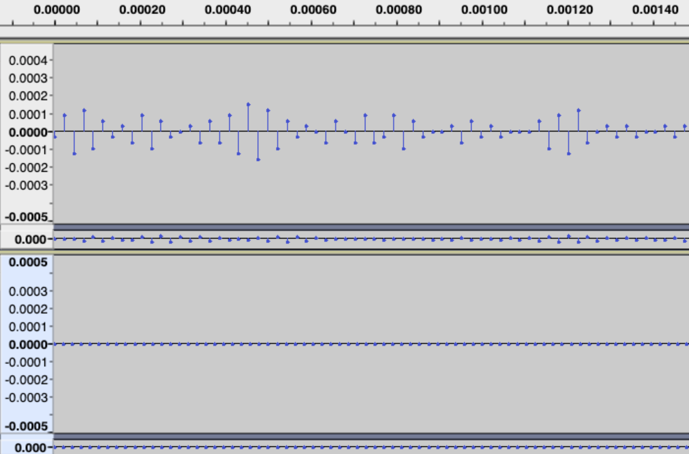
上がDream Goes On、下がワン・ツー・スゥイーツ。時間が示すように先頭部分。16bit PCMにして3程度の振動が入っている。
こういうフレームはランレングスでやってしまうべきかと思う。ランレングスの判定基準を甘くしよう。
2019.3.20
通勤中に思いついたこと:
- 自己相関はピークをとらずに、単に最大値をとればよいのでは
- 実質今その実装。簡略化する。
- 各ブロックの立ち上がりでパラメータが大変動する。先頭は単純符号化でよいのでは
- もしくは、先頭部分だけの平均を計算しておく。
- 30以上の高次係数は4bitとかで良さそう
- →悪化傾向。16,20以降の係数を4bitにしたが悪化。
- ライス符号化のパラメータはlog2(e)使うやつじゃなくて良かったか
- m = log2((loge2)E(|e|)) という式
- Wavpackが言及したDataCompressのp67周辺の記述。
2019.3.21
3.20の夜は疲れて何もできず。寝不足か。
アニソンAnother stageの中止発表を受ける。急いでキャンセルしたい。
その他は今日はランレングスの調整から始める。
- 閾値を上げるのは効果あり。
- 残差分布はほぼ対称になった。
- パラメータをいっそ平均に変えるのも効果あり。
- ランレングス中で適応的ライス符号を使うのは悪化。
- ランレングスのときのゴロム符号パラメータは平均をそのまま使う。
ゴロム符号の初期パラメータは先頭だけから求めることをする。 →16bitを越えてしまった。やっつけで16bit上限を設けたら性能が悪化。どうゆうことだ…。
モジュール簡略化のため、ゴロム符号パラメータはヘッダに含めないようにする。 →やった。
最後、DreamGoesOnがデコードアサーションしている（ゴロム符号パラメータが0になった）ので、修正してまとめていきたい。他のファイルはもとに戻る。ピッチ検出に失敗するのがトリガー？ →イチローの引退会見を横目にデバッグ。どうも4537回目のブロックデコードで20bitずれている。（20bitの空白ができていて、20bit空読みすると完全一致になる。）ランレングスを読みそこねている？
無音部分（ランレングス）の圧縮率が悪いかも。他コーデックを参考にすべきか...
- 最大ランレングス長さ（を表現可能なビット長）を先読みで解析しておく…？
- PARCOR係数を出す前に、エンコード対象のデータ列が本当の無音（0列）か否かを判定する。
2019.3.22
バグ直し。 デバッグ中に気づいたけどランレングスのときにあまりランで出力できていない（ほとんど非ラン）…。閾値はもっと厳しくしていいのでは…。あと、まじの無音（0だけ）は特別な符号で表すだけでいいと思った。
バグ退治。エンコード時、ランレングスで最大長出力時に誤りがあった。
```c:誤 / 非ラン分出力 / while (notrunlength >= MAXLENGTH) { / snip... /
`MAXLENGTH = (1 << length_bits) - 1`だから、ピッタリ`notrunlength == MAXLENGTH`の時に、本当は何もしなくても出力できるのに、分割出力してしまう。正しくはこちら：
```c:正
/* 非ラン分出力 */
while (notrunlength > MAXLENGTH) {
/* snip... */
日記を見返していたら、最適なライス符号パラメータの式あるやん…平均に0.382(49/128)足すだけでいいじゃん。。。→簡単に適応的なやつに試したけど悪化。しかもゴロム化するのでやめとく。
2019.3.23
残りTODO:
- 引き続きランレングスの吟味。
- できれば完全無音のブロックをもっと少ないビットで符号化したい。
- やった。無音フレームか否かを識別するフラグを追加。やらしいのは、係数による結果だと誤りが出る所。入力が全て0かを判定して行う必要がある。
- ワン・ツー・スゥイーツやSPARKLEなどの純正マスタリング音源に効果あり。（リアル無音なんか自然ではほぼ作れないから、当然ではある...。）
- ランレングスいらねえんじゃね…。
- ラン長が短すぎる。手元のDreamGoesOnやVoice48aでは最長12とか。
- 無音に近い場合は、パラメータを適用変化させないほうが良い？以下の表参照。→分散が小さく分布変動も小さいから、固定したほうが有利かも。
- と思って固定パラメータ出力したら増えた…？なぜ？ほぼラン出力できてないのに増えるのはおかしいと思う。もうちょっと精査する必要あり。
- → returnし忘れていた。ただのしょうもないミス。
| 音源 | ランレングスあり | ランレングス無し | ランレングス無し（固定ゴロム符号） |
|---|---|---|---|
| voice48a | 789104 | 788643 | 788617 |
| DreamGoesOn | 23927826 | 23962467 | 23922982 |
- ロングタームをピークではなく単純最大に置き換える
パラメータ固定小数を整数に戻すとき（右シフト時）、0.5を足して丸めるようにしたら性能改善。固定小数は丸めが大事だ…
2019.3.25
あーLMS（適応的アルゴリズム）を忘れていた…試したい…。 image_comp/LMS/lms_test.rb でテスト可能。
試してみる。すると、かなり減るように見えるぞ、おい。誤差の分散（と標準偏差）をプロットしてみたけど、増えることはなく、減っている。次数を増やすと減少が鈍るけれども、増えないだけでも有益に思える。次数を増やしても、振幅が小さめのボイスデータはかなりへる傾向が見られたので結構有益かも。
今はdoubleで演算していたけど、固定小数に置き換えたときにどうなるか。それを含めてやはり試してみたい。
2019.3.26
LMSのモジュール化を試みる。APIは極めて簡単に作れる。
```c:API案 / NLMS計算ハンドル / struct NLMSCalculator;
/ NLMS計算ハンドル / struct NLMSCalculator { LPCFixedFloat1_31 alpha; / ステップサイズ / LPCFixedFloat1_31 coef; / 係数 / uint32_t max_num_coef; / 最大の係数個数 */ };
/ 計算ハンドルの作成 / struct NLMSCalculator* NLMSCalculator_Create(LPCFixedFloat1_31 alpha, uint32_t max_num_coef);
/ 計算ハンドルの破棄 / void NLMSCalculator_Destroy(struct NLMSCalculator* nlms);
/ 予測 / LPCApiResult NLMSCalculator_PredictInt32( struct NLMSCalculator nlms, uint32_t num_coef, const int32_t data, uint32_t num_samples, int32_t* residual);
/ 合成 / LPCApiResult NLMSCalculator_SynthesizeInt32( struct NLMSCalculator nlms, uint32_t num_coef, const int32_t residual, uint32_t num_samples, int32_t* output);
`alpha`は`0.01f`(32bit固定小数で=`0x0147ae14`)あたりに固定したい。
### 2019.3.27
上記のとおりに実装。LPCが膨れるので、そろそろ整理したい所。`predictor.c`にリネームしようかな。
16bitの振動する信号に対しては予測が動いている。定数入力に対して係数が更新されない…（分散が0だから？）。24bitはダメダメ。これは溢れが起きているかも。どうも19bitまでは良くて、20bitからだめみたいです。
TODO:LPC/PARCORの24bitテスト。
### 2019.3.28
周りが焦らなくて焦る。木村監督は叩かれてる。
24bitでだめなのは、やはり桁あふれだろうということで真面目に乗算の度にシフトしていた。すると、誤差がいつまでも残るようになった。それはいやなので、alpha抜き（alpha=1と同じ）で計算してみると収束が非常に良くなった。これで行こう。
→更新式がまだ溢れている。結果は正しくなっているけど。。。
### 2019.3.29
NLMSの更新式間違ってるわ。分散じゃなくて、単純に入力の2乗（パワー）で良かった。したら白色雑音意外は収束するようになった。よし、使える。
PARCORの24bit版テストを追加。テストは通っている。
### 2019.3.30
秋葉原製作所2時間。GWは小松に行こう。NLMSの更新式で整数除算を使うので、速度が気になっている。以下のサイトが有効かも。
- [整数除算の高速化](http://www.emit.jp/prog/prog_div.html)
...適用は難しいことがわかった。32bit精度演算だと、最後の計算で右62bitシフトが必要になる。これはつまり128bit精度で途中結果を持たないと行けない…
単純なビットシフトに置き換えてしまって良いように思える。ほか、うろついてたらlog2の切り捨ての計算方法があった。
- [floor(log2(x))の計算](http://d.hatena.ne.jp/homeskill/20110806/1312626490)
- [Find integer log base 2 of an integer（黒魔術）](https://programmizm.sourceforge.io/blog/2011/find-integer-log-base-2-of-an-integer)
- [Integer Log2 implemented using binary search](https://codereview.stackexchange.com/questions/151312/integer-log2-implemented-using-binary-search)
シビアに高速化できそう。もしかしたらハッカーのたのしみに載ってそう。
高速化はおいておいて、NLMSを取り込んでいく。→取り込んだ。次数はとりあえず10。全体的に減少が見られる：
-rw-r--r--@ 1 * staff 40586832 Mar 30 14:32 one_two_sweets_offvocal.sol -rw-r--r--@ 1 * staff 30960017 Mar 30 14:30 SPARKLE.sol -rw-r--r--@ 1 * staff 52560 Mar 30 14:33 kisaragi_chihaya.sol
PARCOR係数の次数を増やすとNLMSによる恩恵が少なくなるが、それでも減る。以下の結果はPARCOR係数を20にしたときの結果：
-rw-r--r--@ 1 * staff 39715652 Mar 30 14:37 one_two_sweets_offvocal.sol -rw-r--r--@ 1 * staff 30101640 Mar 30 14:36 SPARKLE.sol -rw-r--r--@ 1 * staff 52332 Mar 30 14:35 kisaragi_chihaya.sol
以上で圧縮技術の駒は揃っただろう。NLMSについて気になるのは、次数と残差計算の順番。PARCORによる残差は最初に出すとして、NLMSとロングタームはどちらを先に入れるのが良いか。これらを検証したら切り上げる。
残差計算の順番は、なんと、順番に依存しない（変わらない）ことがわかった...。サイズは厳密に一致。これはNLMSの短期予測の結果はロングタームの結果に何ら影響を及ぼさないことを意味しているのだろうか。。。
次数について見ていく。PARCOR係数は10、ロングタームありでの比較：
| NLMS次数 | ワン・ツー・スウィーツ | SPARKLE | 俺の声 |
|:-:|:-:|:-:|:-:|
| 未適用 | 40978249 | 31055202 | 52577 |
| 1 | 41098033 | 31274844 | 52572 |
| 5 | 40800621 | 31090112 | 52563 |
| 10 | 40586832 | 30960017 | 52560 |
| 15 | 40499597 | 30931506 | 52559 |
| 20 | 40483976 | 30921234 | 52558 |
| 25 | 40465348 | 30915117 | 52557 |
| 30 | 40450833 | 30910096 | 52553 |
| 50 | 40397208 | 30896233 | 52535 |
| 100 | 40326600 | 30863911 | 52532 |
計算負荷高い。サンプル毎に係数更新しているのが結構効いてるかも…（係数更新で除算使ってるし）。でも次数を増やしても悪化しないのは都合が良い。プリセットの設定がしやすい。
- [固定小数点数の算術関数ライブラリ](http://www.geocities.jp/midarekazu/math-library.html)
### 2019.3.31
起床事故。12:00に起きる。マジカルミライの予約してたら14:00。その間に除算を減らした。NLMSは処理を共通化できる。やっておきたい。
あと、今日はversion.5に向けたモジュールソース分割を考えて、手をつけていきたい。秋葉原製作所16:00-21:00の予定。
17:15 NLMSの処理共通化完了。
---
#### オンメモリ書き出しへの変更点要点（改訂版）
- ソースは独立して切る。新規に書き起こす。無駄な部分を消す。
- シグネチャを`SL* `に変える。
- 拡張子は`.sla`。Sound Lossless Audio（良好なロスレスオーディオ）の略。あるいはSHINING LINE*。
- バージョンは1
- 再度バイナリフォーマットを考察
- ブロックサンプル数等、1部フィールドのサイズ見直し
- エンコードパラメータの整理
- プリセットを作成。
- 低圧縮率でデコード早い ? 高圧縮率でデコード遅い
- メモリ領域読み書きに変える。
- オンメモリ対応のため。
- ひとまずBitStreamのメモリ版に変えるが、将来的には高速なビット読み書きモジュールを使用する。
- エンコード・デコードの関数化
- ストリームエンコード・デコードハンドル作成関数
- エンコードサイズの計算関数
- ストリームエンコード・デコード関数
- 高速化
- 格子型フィルターを1乗算型に変える
- 負荷測定
- 性能検証
- 比較プログラムの作成。
- 様々なwavに対してエンコード・デコードし性能（圧縮率と速度）比較
- TAKと戦っておきたい。
---
18:46 気になっていたバイトアラインを退治。サイズは1kほど増えたが、汎用性のためには全く問題なし。よし、19:00から思い切ってソース切るか。
20:48 エンコーダ・デコーダ以外はソースを切った。エンコーダデコーダはAPIを検討する必要がある。
これは平日に投げよう。21:00になった。
### 2019.4.2
有給とって作業。なんとしても、今日中に第一版を上げたい。仕様を紙に書いたので、まずはここに複写する。
#### SLAヘッダ
| サイズ(bits) | 内容 | 補足 |
|--:|:-:|:-:|
| 32 | シグネチャ `"SL* "` | Sound Lossless Audio, あるいはSHINING LINE* |
| 32 | 一番最初のデータブロックまでのオフセット（自分除く） | RIFF等の慣習に従って32bit |
| 16 | これ以降のフィールドで、ヘッダ末尾までのCRC16 | |
| 32 | フォーマットバージョン番号 | 1 |
| 8 | チャンネル数 | 足りるでしょ…（怠慢） |
| 32 | 全サンプル数 | 足りるでしょ…（怠慢）。ストリームエンコード時は未定義=`0xFFFFFFFF` |
| 32 | サンプリングレート | 足りるでしょ…（怠慢） |
| 8 | 1サンプルあたりのビット数 | wavへの復元で必要 |
| 8 | PARCOR係数次数 | 無音ブロック以外の全ブロックで同一 |
| 8 | ロングタームタップ数 | ブロック毎に異なる |
| 8 | NLMS次数 | 無音ブロック以外の全ブロックで同一 |
| 8 | チャンネル毎の処理法 | 無音ブロック以外の全ブロックで同一 |
| 32 | SLAブロック数 | ストリームエンコード時は未定義=`0xFFFFFFFF` |
| 16 | SLAブロックあたりの最大サンプル数 | |
| 32 | 最大ブロックサイズ[byte] | 最低ビットレートの計算に必要。ストリームエンコード時は未定義=`0xFFFFFFFF` |
ヘッダサイズは38byte。
#### SLAブロック
| サイズ(bits) | 内容 | 補足 |
|--:|:-:|:-:|
| 16 | 同期コード`0xFFFF` | アルファ符号は最大で15個までの連続した1を出すから。 |
| 32 | 次のデータブロックまでのオフセット | |
| 16 | これ以降のフィールドで、次のブロック先頭までのCRC16値 | |
| 16 | このブロックのサンプル数 | |
| 1 * チャンネル数 | 無音ブロックか否か？ | |
| 16 * チャンネル数 * MIN(4, PARCOR係数次数) + 8 * チャンネル数 * MAX(PARCOR係数次数-4, 0) | PARCOR係数 | 最初の4次までは16bit, 残りは8bitで符号化。非線形量子化は行っていない。 |
| 1 * チャンネル数 + 26 * ロングターム有りch数 | ロングターム係数 | ロングタームを使用していないチャンネルは0が入る。1の場合、最初の10bitでピッチ周期、次の16bitで係数が符号化されている。 |
| 不定 | 再帰的ライス符号化された残差 | チャンネルインターリーブではない。1ch目の符号化された信号列先頭, ..., 1ch目の符号化された信号列末尾, 2ch目の符号化された信号先頭, ..., 2ch目の符号化された信号末尾,...という並び。 |
15:56 ヘッダを書き下すところまではOK。現段階では壊れたところは見当たらない。実装を埋めていく。今日でとりあえずの第一版を上げて、レビューを受けたい。間に合ってくれ…！
19:34 エンコーダのやっつけ版ができた。まだコンパイル・テストはしていない。コンパイルを頑張って通すようにして、デコーダに手を付ける。
25:00 なんとかエンコード・デコードができるもの（alpha版1）を作成。
### 2019.4.3
先輩に見て頂いているが、いろんな問題が見つかっている。
- `M_PI`が未定義で怒られる
- プラットフォームによって圧縮率が異なる
- まず気になるのはfloatが一部混入している所。思い切ってdoubleにしよう。
- Rpiでは関係なかった…原因を追っていたら、C89では`round`が定義されていなくて、係数が全部0になっていた。。。`std=c99`にしたらOKだったけども…。下の独自実装を使う。
- splintにかけたら負数の右シフトはやべえぞとあった。確かに。算術シフトとは限らないので静的アサートしよう
- ハッカーのたのしみを引用すると、算術右シフトをやるには以下の式：
```c
/* 算術右シフト(有効範囲:0 <= rshift <= 32) */
#define SHIFT_RIGHT_SIGNED(sint, rshift) (int32_t)((((uint64_t)(sint) + 0x80000000UL) >> (rshift)) - (0x80000000UL >> (rshift)))
- デコードに失敗するケースがある
- テスト追加（移植）
- 簡単に負荷を測ったところ、RecursiveRice_PutQuotPartの負荷が高かった。パラメータは絶対2の冪だから、決め打ち（ライス符号化）でいいのでは。
```c:丸め関数の独自実装 double round(double number) { return (number >= 0) ? (double)((int)(number + 0.5f)) : (double)((int)(number - 0.5f)); } double round(double f) { return (f >= 0.0) ? floor(f + 0.5f) : -floor(-f + 0.5); }
もう少し警告をうるさくしたいので、オプション探索中。`splint`もかけたいし、`gcc -Wall -Wextra -Q --help=warnings`で有効になっている警告を表示できる。
- [警告を要求/抑止するオプション](http://www.cqpub.co.jp/interface/column/freesoft/2003/200308/3.htm)
コマンドラインパーサを作る時が来たかも。`getopt_long`（GNU拡張） を自前で実装したもの
- [コマンドライン引数の処理](http://linuxc.info/stdinout/getopt/)
- [コマンドラインオプションの処理](https://www.mm2d.net/main/prog/c/getopt-03.html)
性能計測してたら、nlz5の呼び出し回数が多いことが分かった。もしかしたら高速化した方がいいかも。ビットカウント問題に帰着する方法が一番速そう。
### 2019.4.5
準備で4.4は何もできず。思いついたのはceil(log2(x))は2のべき乗切り上げに変えられるということ。
### 2019.4.6
4.5は2時間半しか寝てないので今日は12時間寝た。週末はテスト追加と、上記の修正を入れていきたい。
テスト追加はOK。はやめにrepo.作る。`-Wpedantic -Wformat=2 -Wconversion`をつけて警告を潰す。
14:09 飯食いながら警告を潰した。15:00から2回目なのでここで切り上げる。
macで性能計測する方法がわからなかったので調べた（`gprof`が使えなくて悲しい）。instrumentsを使う。
```sh
$ instruments -t "Time Profiler" ./sla -c voice48a.wav voice48a.sla
実行の結果できあがった.traceファイルを開けばプロファイル結果が見られる。
最適化を気にし始める：
これ以上は、多分根本的に戦って行かないとだめかも。一旦最適化はおいて、CRC16等の機能追加に入ろう。と思ったらCRC16壊れてる。うーんやり直し。秋葉原製作所3時間タイムアップ。
家で作業。CRC16のリファレンスを入手するのにすげえ苦労した。pythonのpycrcを使う。
python3 pycrc.py --model=crc-16-ccitt --xor-in=0xFFFF --check-file foo.txt
CRC16の組み込みOK。同時にブロックの次のオフセット記録もOK。未テストだからテスト突っ込みたい。
あとは、いよいよPARCORを1乗算型に変えるかな…
2019.4.7
コンパイラをmacのclangからgcc-8に変えたら警告がドバーッと出たので消していく。気になるのは論理定数を導入したほうが良さそう（列挙型で良い）。あと1乗算型変更が着手を今日のメインとしたい。できるか…？
CRC16は、CCITT-FALSEよりCCITTにしたほうが良いな。Linuxカーネルでよく使われるのはCCITTだし。と思ったらやめた。CCITT-FALSEでいく。Linux内部でも実装がブレブレ。初期値の与え方、結果の反転のやり方が使用箇所毎に違う。
そして、今assertを消そうと思って-DNDEBUGを入れたら圧縮結果が変わった。これは最適化時に何かが起きている。
→原因が判明。assertマクロ自体(void)0に置き換えてしまうから、なにか副作用のある処理をassertしていると、最適化により処理自体が消されてしまう。SLABitStreamを使うところでassertsしているところが多数あってassertを消すと挙動が変わっていた。
SLABitStream_GetBit の負荷が高い。アルファ符号を取得するときに頻繁に呼ばれる。アルファ符号向けにランレングスを取得する関数を追加すべきか…？
NLZの高速な計算手法があった…もはや黒魔術。
分岐無しで自明に早いので取り込んでいる。
やりたいこと一つ出てきた。ヘッダのエンコードとデコードはハンドル無しでやるべき。（ハンドルがない状態で呼ばれるかもしれないから）。だから、バイト列の読み書きモジュールを新規に追加したい。おそらくヘッダ実装で間に合うはず。
うーん、CRC16の選択にまだ迷う。CCITT-FALSEはCCITTのミスみたいな記述があるし…。
- 計算リファレンス
- Catalogue of parametrised CRC algorithms with 16 bits
- A PAINLESS GUIDE TO CRC ERROR DETECTION ALGORITHMS
やっぱり社内と統一をとるため、CRC-16/ARCにしようか。
あと、窓関数の変更対応ができてなくてサイン窓固定になってる…変えなきゃ…
2019.4.9
週末は完全に予定が入っているのでなんとか進めたい所。GWの予定も考えていかないと。
CRC16をIBM(ARC)に変えた。
特許調査始めないとダメかも…
- 特開2013-120225(P2013-120225A)
2019.4.11
特許を見始めているが、権利一体の原則の見地から見ると、おそらく抵触しないのではという感覚。油断せず継続調査。
ヘッダのエンコード・デコードをハンドル無しで行うように修正。 あと、入力が32bit整数ににスケールされている整数というのはなんとなく格好悪い。（例：16bitの65535が32bitのINT32_MAXになっている）
GWでは格子型フィルター演算の高速化・圧縮率改善の最後のあがきをすべきか。ロングタームが1tapしか使えないのがやだ。TAKのサイト見てたら前処理でフィルター入れているとのこと…やってみたい。
2019.4.14
4.14は夕方から秋葉原製作所3hコース。やるべきは、エンコード・デコードのテスト追加か。Create関数をワーク渡しにするのはまだ先としたい（メンバ追加はやりそうだから）。
2019.4.17
15,16はテストを少し追加していただけ。1乗算型PARCORの実装方法をついに見つけた。「音声のディジタル信号処理（上）」のp96だ。
2019.4.18
1乗算型にしようとしてみるがどうもならない。最初に実装した形がそもそも違うように見える…
2019.4.19
TAKの圧縮率にビビる。というか、これもうTAKの勝ちでは…。 TAKは線形予測の前に何かしらのフィルターを使用しているが、もしかしたら、NLMSかも？
下の結果は-p4（最大圧縮率）を使用。
-rwxrwxrwx 1 kiriao kiriao 38580251 Apr 19 18:52 one_two_sweets_offvocal.tak
-rwxrwxrwx 1 kiriao kiriao 28597636 Apr 19 18:52 SPARKLE.tak
-rwxrwxrwx 1 kiriao kiriao 50358 Apr 19 18:52 kisaragi_chihaya.tak
-rwxrwxrwx 1 kiriao kiriao 21068517 Apr 19 18:54 Dream_goes_On.tak
-rwxrwxrwx 1 kiriao kiriao 753612 Apr 19 18:52 voice48a.tak
日に日に乗算結果を64bitで受けている現実が気になってきている。TAKは14bitだという。SSE化を見越した時に有利なのはどちらかは明らかだ。
TAKを越えない限り商品化は厳しいと思う。
2019.4.20
TAKに追いつきたい。まずは今のソースをgitに登録する。→やった。
- 可変ブロックサイズ対応
- PARCOR係数から残差電力を求められたはず。これで（もしくは符号長から）、最も残差電力が小さくなるブロックサイズを決める。
- フィルタ処理の追加
- TAKでは線形予測の前にフィルタを入れている。ローパス、ハイパス、NLMSを入れてみてどうなるか見る。
- 平均が小さい時にLZ符号化を試す
- やってみたけど芳しくない。増える傾向。一方で適応的ハフマンを使ったら圧縮率がわずかに上がった。でも多分、幾何分布に従うことを考えて静的でも良いかもしれない。この結果は参考にしたい。
まずは可変ブロックサイズ対応の前段階として、PARCOR係数による残差電力が実際の残差電力と一致するか観察する。
→そこそこ一致。傾向は合ってるかも。計算は0次自己相関*Π(1-PARCOR^2)でやった。誤差が出ているのはfloatじゃないのが問題かも。理論はおそらく正しい。
以下にその説明有り。
得られたPARCOR係数から残差電力を計算する関数を追加しておく。しかし係数の当てはまりの良さを考えるなら、Π(1-PARCOR^2)（分散比。分散をどれだけ減らせたのかの比。）だけで良いはずなのでこれを計算する関数を追加した。エンコーダはこれを使って最小の残差を与えるブロックサイズを探す方針。
次は、というか今日のメインとして、線形予測前にフィルタを突っ込んで見る。あと30分しかないけど！
→NLMSを突っ込んだが悪化。FIRローパスは短い音声で大悪化、長い音声でほんの少し減少。他にできることがないか探してみる。
2019.4.21
可変ブロック対応に当たり、上の論文を読んでいたら、ラプラス分布を仮定したときの符号長推定について書いてあった。これは大変に有益。これを使い、サンプルあたりの符号長としてブロックサイズを決めてみたい。
16bit整数として計算したときに、かなりの精度で予測できていることが分かった。計算量的にも大きくないから、取り入れていく。
なんだか実験がうまく行っていて、残り1時間あるからエイヤで組み込んでしまうか。
なんか組み込めた。そして減った。観察の結果は次:
- SPARKLEと俺の声は減った。しかし、ワン・ツー・スゥイーツでは増えている。
- 窓をかけてPARCOR係数を計算して推定を行うと、圧縮率が悪化する。
- 最大ブロックサイズを10240(232ms @44.1kHz)まで伸ばすべきかも。
- 無音時にどうなっているか怪しい。
バグの調査が甘い（一応戻ることは確認している）が、速報値は以下：
-rw-r--r--@ 1 * staff 40672844 Apr 21 20:45 one_two_sweets_offvocal.sla
-rw-r--r--@ 1 * staff 30850345 Apr 21 20:51 SPARKLE.sla
-rw-r--r--@ 1 * staff 51915 Apr 21 20:48 kisaragi_chihaya.sla
家帰って試行錯誤。まずはfloatの正規化が抜けていたのでpow(2,-31)をかけた。また、最小ブロックサイズを小さくしすぎると(1024とか)ワン・ツー・スゥイーツの性能が悪くなった。逆に長くすると(4096とか)俺の声が悪化。
一つバグがあって（符号長のチャンネル平均が取れていなかった）潰したところ、性能改善。
-rw-r--r--@ 1 * staff 40245317 Apr 22 00:02 one_two_sweets_offvocal.sla
-rw-r--r--@ 1 * staff 30800189 Apr 22 00:03 SPARKLE.sla
-rw-r--r--@ 1 * staff 51776 Apr 22 00:03 kisaragi_chihaya.sla
最大ブロックサイズを16384までしたところ次の結果：
-rw-r--r--@ 1 * staff 40148214 Apr 22 00:30 one_two_sweets_offvocal.sla
-rw-r--r--@ 1 * staff 30783283 Apr 22 00:32 SPARKLE.sla
-rw-r--r--@ 1 * staff 53486 Apr 22 00:31 kisaragi_chihaya.sla
たぶん最適割り当て問題になっている。今は、現在与えられたサンプル列を一番小さく符号化できそうなブロックサイズを使用している。これはグリーディな方法と言える。もしかしたら、エンコードすべきブロックの内容の先読みなり最適割り当てを行ったほうが性能がいいかも。当然良いはず。最大ブロック数分サンプルを見て、その中で最適な分割を探す問題とする。
非線形量子化、危ないけど導入すべきか…あと線形予測前のフィルターも気になる…。TTAを参考にすべきか。
2019.4.22
TTAのソースの可読性が著しく低い（愚痴）。filter関数ですべてをやり切ってるけど、何やってるかさっぱり。コメントもない。 へらへらしていたら、Levinson-Durbin法とは別にBurg法というものがあることを知った。周波数分解能が高い（他に問題もある）らしい。
- Burg’s Method, Algorithm and Recursion
- Pythonで線形予測分析 (LPC) を学ぶ
- A Fast Implementation of Burg’s Method
- Algorithms for speech coding systems based on linear prediction
- Burg Method(MATLAB, 自己相関等との比較)
家帰って実装をしてみた。C++実装をもろ写経。予測してみたけどいい感じ（LPCより予測精度が高い）。 問題はPARCOR係数の解釈があっているかどうかというところ。
2019.4.23
Burg法実装がプロトタイプでできたので組み込んで様子を見る。三角関数の重ね合わせではLevinson法よりも予測精度が良かったけど、実wavに対しては良くならなかった。（窓を外しても、サイズを固定にしてもだめ）全体的にサイズ増加。何がいけないのかもよくわからない…。
改めて残りの減少ネタ。上から優先順位高い方：
- float → double
- ブロックサイズ決定を最大ブロックサイズから初め、最大ブロックサイズの中の小分割の中で一番サイズが小さくなるものを採用する
- エンコード高速化（最大ブロックサイズ毎で処理が独立になるので並列実行可能）にもなるので、こちらで行きたい。
- ロングタームを3次以上に対応させる
- 平均（もしくは最大値が0xFF以下）が少ないときの符号化をハフマンに
- 分散が異なるラプラス分布（もしくは幾何分布か？）のハフマン符号テーブルを作っておく。
- 線形予測前のフィルター処理
- TAKのページを改めて見ると、2つのフィルターを本チャンの線形予測フィルタの前に入れることができるとのこと。
- 一つは窓関数かもしれない。もう一つは一体何だ？プリエンファシスでは無いと思う。
- 平均除去とか？
- ブロックサイズ推定を実測してみる
- 窓関数の再考
- sin窓を今だに使い続けている
- Lanczos窓とかどうだろうか
2019.4.25
小松観光計画
基本はGAFの聖地を優先。しかし一日で回りきれそう。空いた時間は風呂にしたい。
- GAFの聖地一覧
- うつのみや小松城南店（本屋）
- 莵橋神社
- 8番ラーメン（城南末広店）
- 安宅の関（海沿い）
- 小松基地周辺
- 風呂
| 日付 | 何するか |
|---|---|
| 4/27 | - コーデック圧縮率向上施策考案 - コーデック評価スクリプト作成 - デコードテスト追加 |
| 4/28 | - プリパラフレンドシップツアー - 秋葉原で一泊 |
| 4/29 | - 絵師百 - 深夜バス乗車（渋谷） |
| 4/30 | - 小松駅着。ロッカーに荷物を入れて聖地巡礼開始。 - 本屋→神社→安宅→小松基地？ - 昼は8番ラーメン - 夜は海鮮丼。駅前に戻って松屋旅館へ。 |
| 5/1 | - 温泉につかりながら作業 - 加賀の宿 柴山温泉 ホテル翠湖で一泊。 |
| 5/2 | - 温泉につかりながら作業 - 金沢18:09発の新幹線で移動→19:59佐久平着。 |
2019.4.26
ラプラス分布の最尤推定について。なんと、平均が0ならば単純な絶対値の標本平均が分散になる。
2019.4.27
コーデック評価スクリプトを昨晩にやっつけで仕立て上げた。ほしいのは以下の表。CSVで出せると良い。
圧縮率
| 波形 / コマンド | 元波形[byte] | flac -8[byte] |
flac -8[%] |
wavpack -hh[byte] |
wavpack -hh[%] |
... |
|---|---|---|---|---|---|---|
| いばらの女王 | 20000000 | 12000000 | 50% | ... | ... | |
| ハローハロー | 22000000 | 14000000 | 63% | ... | ... | |
| 累計[%] | 42000000 | 26000000 | 62% | ... | ... |
デコード速度
| 波形 / コマンド | 元波形[ms] | flac -8[ms] |
flac -8[x] |
wavpack -hh[ms] |
wavpack -hh[x] |
... |
|---|---|---|---|---|---|---|
| いばらの女王 | 2000 | 20 | 100 | ... | ... | |
| ハローハロー | 2200 | 22 | 100 | ... | ... | |
| 累計[%] | 4200 | 42 | 100 | ... | ... |
秋葉原製作所5hコースで作業し、上記の表に該当する結果は得られた。軽く自分の声で試してみると、やはりまだ圧縮率が悪い。。。tta,wavpackよりも下。振幅が小さいデータに対する圧縮率が悪い傾向がある。
2019.4.29
今日は22:45渋谷発小松行きに乗るまでで作業する。やることはラプラス分布の最尤推定の当てはまりがどれくらい良いか確かめること。
見ているけどラプラス分布で当てはまりはあまり良くない…。正規分布はひどい（0近辺の当てはまりが絶望的）。幾何分布が一番当てはまりが良い印象（SPARKLEはよく当てはまるが、それ以外の音源で微妙…）。やるとしても幾何分布か…。
そもそも、符号化手法を考え直すべきか…。適応的に分布が小さくなっていたらランレングスに切り替える符号化有り。
wavpackの動作原理はわかっている（つもり）だから、TTAのソース読もうか…
```c:ttaのエンコードソースの一部 __forceinline void tta_encoder_put_value(TTA_adapt *rice, TTAint32 value) { TTAuint32 k, unary, outval;
outval = ENC(value);
// encode Rice unsigned
k = rice->k0;
rice->sum0 += outval - (rice->sum0 >> 4);
if (rice->k0 > 0 && rice->sum0 < shift_16[rice->k0])
rice->k0--;
else if (rice->sum0 > shift_16[rice->k0 + 1])
rice->k0++;
if (outval >= bit_shift[k]) {
outval -= bit_shift[k];
k = rice->k1;
rice->sum1 += outval - (rice->sum1 >> 4);
if (rice->k1 > 0 && rice->sum1 < shift_16[rice->k1])
rice->k1--;
else if (rice->sum1 > shift_16[rice->k1 + 1])
rice->k1++;
unary = 1 + (outval >> k);
} else unary = 0;
// put unary
do {
while (enc_fifo_bcount >= 8) {
write_byte(enc_fifo_bcache);
enc_fifo_bcache >>= 8;
enc_fifo_bcount -= 8;
}
if (unary > 23) {
enc_fifo_bcache |= bit_mask[23] << enc_fifo_bcount;
enc_fifo_bcount += 23;
unary -= 23;
} else {
enc_fifo_bcache |= bit_mask[unary] << enc_fifo_bcount;
enc_fifo_bcount += unary + 1;
unary = 0;
}
} while (unary);
// put binary
while (enc_fifo_bcount >= 8) {
write_byte(enc_fifo_bcache);
enc_fifo_bcache >>= 8;
enc_fifo_bcount -= 8;
}
if (k) {
enc_fifo_bcache |= (outval & bit_mask[k]) << enc_fifo_bcount;
enc_fifo_bcount += k;
}
} // tta_encoder_put_value
おそらく2つのライス符号パラメータで再帰ライス符号になっている。値が小さいときの処理は特にしていないように見える（固定フィルター(31/32) *(前サンプル)のあとに謎の適応フィルタを入れている。 __固定フィルターはプリエンファシスだ。そういえば整数で試してなかった。俺も試すべき__）。
```c:固定フィルター処理
#define PREDICTOR1(x, k) ((x * ((1 << k) - 1)) >> k)
/* ...snip... */
// compress stage 1: fixed order 1 prediction
temp = curr;
curr -= PREDICTOR1(enc->prev, 5);
enc->prev = temp;
FLACについても、値が小さいときの処置は特に無い。wavpackも多分無い（読んでみようと思うが…）。
2019.4.30
小松観光。ガーリー・エアフォースの聖地を一通りあさった。今日はあんまり何もできないだろうけど、明日明後日は場所を変えて作業するつもり。5/3からは実家にて作業予定。
上記のプリエンファシスを試してみる…と100KBクラスで減少した。効果あり。
-rw-r--r--@ 1 * staff 40129181 Apr 30 23:07 one_two_sweets_offvocal.sla
-rw-r--r--@ 1 * staff 30704135 Apr 30 23:06 SPARKLE.sla
-rw-r--r--@ 1 * staff 51787 Apr 30 23:07 kisaragi_chihaya.sla
実装を整理（関数化）して就寝。令和が始まった。 振幅が小さい音声の圧縮率がwavpack, ttaと比べて低いのが気になる。
2019.5.1
15:00ホテル翠湖にチェックイン。wi-fiが飛んでいないので、オフラインで作業する。
テーマを1つ決めて試してみたい。昨日今日でやろうと思ったのが、非線形量子化。以前試した時はむしろ悪化する事がわかっていた。そこで、今回は2次成分までをarcsinによって非線形量子化してみた。
結果は、微減（俺の声は1バイト減少、SPARKLEは数百バイト減少、ワン・ツー・スィーツは数十バイト減少）。16bitも割り当ててあれば線形量子化でも十分ということを示している結果だと思う。本を読んでいると、ビット割当数は4-12bitと低くなっている。如何に低いビット数で同一の結果が出せるか…というところに着目すると、非線形量子化は効いてくるらしい。もし、極限までサイズを減らすことを考えるならば、非線形量子化を適用して良いかもしれない。が、処理の単純化（サイズ削減が処理の複雑化に対して見合ってない）と、減らせるサイズが高々数KBで本質的にサイズ削減になっていないので、16bitで良いと思う。
非線形量子化があまり美味しい策では無いことが分かった。本日は、ブロックサイズ決定の処理を
- ブロックサイズ決定を最大ブロックサイズから初め、最大ブロックサイズの中の小分割の中で一番サイズが小さくなるものを採用する
- エンコード高速化（最大ブロックサイズ毎で処理が独立になるので並列実行可能）にもなるので、こちらで行きたい。
に変えてみる。これ、一見減らないように見えるけどどうだろうか。FLACはこれとほぼ同じやり方をしている。wavpackとTTAのブロックサイズ決定方式を見て、風呂に入る。
- TTAはサンプリングレート依存で決まる固定サイズっぽい。（かなり大きい。フィルターがLPCじゃないから、20ms程度にしなくてもOKなのかも）
```c:libtta.h typedef struct { TTAuint32 format; // audio format TTAuint32 nch; // number of channels TTAuint32 bps; // bits per sample TTAuint32 sps; // samplerate (sps) TTAuint32 samples; // data length in samples } TTA_ALIGNED(16) TTA_info;
```c:libtta.c
#define MUL_FRAME_TIME(x) (256 * (x) / 245) // = x * FRAME_TIME
/* ...snip... */
dec_flen_std = MUL_FRAME_TIME(info->sps);
- wavpackはサンプリングレートとチャンネル数依存ぽい。けど謎ルール。。。コメントに妥協しているみたいなことが書いてある。計算の結果
wpc->block_sizeにブロックサイズが入り、処理途中に変更することはない。
```c:pack_utils.c int WavpackPackInit (WavpackContext *wpc) { if (wpc->metabytes > 16384) // 16384 bytes still leaves plenty of room for audio write_metadata_block (wpc); // in this block (otherwise write a special one)
// The default block size is a compromise. Longer blocks provide better encoding efficiency,
// but longer blocks adversely affect memory requirements and seeking performance. For WavPack
// version 5.0, the default block sizes have been reduced by half from the previous version,
// but the difference in encoding efficiency will generally be less than 0.1 percent.
if (wpc->dsd_multiplier) {
wpc->block_samples = (wpc->config.sample_rate % 7) ? 48000 : 44100;
if (wpc->config.flags & CONFIG_HIGH_FLAG)
wpc->block_samples /= 2;
if (wpc->config.num_channels == 1)
wpc->block_samples *= 2;
while (wpc->block_samples > 12000 && wpc->block_samples * wpc->config.num_channels > 300000)
wpc->block_samples /= 2;
}
else {
int divisor = (wpc->config.flags & CONFIG_HIGH_FLAG) ? 2 : 4;
while (wpc->config.sample_rate % divisor)
divisor--;
wpc->block_samples = wpc->config.sample_rate / divisor;
while (wpc->block_samples > 12000 && wpc->block_samples * wpc->config.num_channels > 75000)
wpc->block_samples /= 2;
while (wpc->block_samples * wpc->config.num_channels < 20000)
wpc->block_samples *= 2;
}
wavpackの予測はsign-sign LMSに基づいているらしい。
- [9.10 THE NORMALIZED SIGN?SIGN LMS ALGORITHM](https://www.oreilly.com/library/view/adaptive-filtering/9781482253351/xhtml/20_Chapter09a.xhtml)
- [Lecture 8: RX FIR, CTLE, DFE, & Adaptive Eq.](http://www.ece.tamu.edu/~spalermo/ecen689/lecture8_ee720_rx_adaptive_eq.pdf)
- [Lecture 5: Variants of the LMS algorithm](https://www.cs.tut.fi/~tabus/course/ASP/SGN2206LectureNew5.pdf)
3番目の記事を読んでいたら、Signed LMSは絶対値誤差の最小化に基づいているので、もしかしたらライス符号化に適しているかもしれない。実装は簡単なので早速試したところ、俺の声は1バイト減少したが、SPARKLEとワン・ツー・スィーツは悪化。これは、大振幅音源に弱いという、wavpackと同様の傾向を示している？
ちょっと待て、sign-sign LMS...性能高いのでは…？今までのNLMSの性能を超えている（タップを増やした時のサイズ減少が大きい）。ちょっと冷静になるために風呂に入る。確かめること：
- 係数の重み
- 高次数にした時は重みを小さくしないと性能悪化に転じる。
- 高次数で小さくなるような重み付けをすると性能改善が見られた。次数を増やすと性能悪化することもあった。次数に応じた重み付けを定式化できると良さそう。
- カスケード接続は有効か？
- 一部有効だった。（次数20を1回適用するより、次数5を4回適用したほうが減る。しかし、1つあたり次数を1,2等減らしすぎると悪化する。これはNLMS（正規化LMS）では見られなかったことだ。）
冷静になってwavpackの実装を見ている。`decorr_tables.h`にテーブルが示されているが固定値のマジックナンバーにしか見えない…。
sign-sign LMSが有効で、NLMSよりも良い結果が出せることが明らかになったため、NLMSをsign-sign LMSに切り替える。同時にカスケード数をパラメータ化する。
軽く負荷を測ったらLMSの係数更新で結構食ってた。でも、係数更新は符号だけできまるから、テーブル引きに変えられるはず。→2019.5.2の朝にやった。x400がx200になった。しかしまだ負荷が高い状態。
### 2019.5.2
金沢に移動。特急券の時間を変えてもらって16:09発の新幹線に乗った。17:56佐久平着までに進められるだけ進める。やりたいのは、上記の高速化。
『音声の線形予測』を読んでいると、1乗算型を実現するのは困難であることが分かる。1乗算型は通常の格子フィルタをKelly-Lochbaumモデルに変形してから導き出すが、それを行うと、追加でタップパラメータを計算する必要が出てくる。タップパラメータの計算精度を担保するのは難しい上に、（次数分の）追加の記憶容量が必要になるので到底許容できない。
### 2019.5.3
実家にて作業。RGRいわきはしゃあない。圧縮をどうしても優先したかった（人生に関わることだから）。本日は以下の作業を行う予定：
- float → double
- ブロックサイズ決定を最大ブロックサイズから初め、最大ブロックサイズの中の小分割の中で一番サイズが小さくなるものを採用する
- エンコード高速化（最大ブロックサイズ毎で処理が独立になるので並列実行可能）にもなるので、こちらで行きたい。
`float -> double`はエイヤでやる。なまじ高速化を意識するから気持ちが悪いことになっているのだ。`double`でちゃんと動くものを作って（アルゴリズム的に高速化して）、後で実装レベルの高速化を行えば良い。
→やった。
ブロックサイズ決定の前に、今の圧縮結果をメモしておく。
-rw-r--r--@ 1 * staff 39849911 May 3 12:37 one_two_sweets_offvocal.sla -rw-r--r--@ 1 * staff 30014592 May 3 12:37 SPARKLE.sla -rw-r--r--@ 1 * staff 51122 May 3 12:36 kisaragi_chihaya.sla -rw-r--r--@ 1 * staff 777422 May 3 12:40 voice48a.sla -rw-r--r--@ 1 * staff 23332503 May 3 12:39 Dream_goes_On.sla
当初の目標（ワン・ツー・スィーツで40MB切る）は既に達成済みではある。長尺の音声ではwavpack(-hhの最高圧縮), ttaよりよい圧縮率を出している状況。しかし眼前にはTAKがいる。
最大ブロックサイズの小分割の件、等分割による実装はできたが、圧縮率が悪化。当然な気がする。以前は現段階での最小推定値を常に使用していたのだから。最大ブロックサイズ内の分割についていい方法は無いか考えていたら、どうも最短経路問題に帰着できそうな気配。符号長さが辺の重みになる。ダイクストラ法が適用できる。
- [ダイクストラ法(C言語)](http://blue-9.hatenadiary.com/entry/2018/01/25/190000)
- [ダイクストラ (Dijkstra) 法](http://nw.tsuda.ac.jp/lec/dijkstra/)
22:45 ダイクストラ法のコア部分は多分できている（テスト中）。風呂入っている時に、アルファ符号取得の高速化は8bitパターンの結果を全てキャッシュしておけば良さそうだというのを思いつく。
```c:擬似コード
static const uint8_t zero_runlength_table[0xFF] = {
/* 0 -> 8 */ 8, /* 1 -> 0 */ 0, /* 2 -> 1 */ 1, ...
};
run = zero_runlength_table[bitsbuf];
/* もし8ならばまだ続いているので再度読み込む */
25:30 やっつけでなんか動いているけど、結果はあまり良くない。等分割よりはすこし良くなった程度。しかし、一つ工夫を考えられた。探索範囲を広くとってその中で探索する。その時大事なのが最大ブロックサンプル数=探索範囲とせず、最大ブロックサンプル数<探索範囲とすること。こうすることで、より広い範囲の探索で最適な割り当てを探れるようになるはず。
26:20 上記の修正を当てようとしてバグを踏んでる。エンコードコンフィグの最大ブロックサイズを探索範囲より小さくし、最大ブロックサンプル数<探索範囲としたときにバッファオーバーランしておかしなことになってる。探索範囲もコンフィグから指定できると良い。
2019.5.3
デバッグ作業。無音に近い時に推定符号長が負値になってダイクストラ法がうまく動かないバグがあった。
とりあえず動いているようだけども結果は良くない。短い音声では良くなったが、長い音声で軒並み悪化。あがいてプリエンファシスをかけた音声に解析を行うけども結果は悪化。
振幅が大きい音声では、どうも長めにブロックサイズを割り当てた方がサイズが減るようだ。（最低ブロックサイズを増やしたところ比較的性能向上）LMSがいい味出していて、収束して圧縮が効いてくるまでに長いブロックサイズを必要としているように見える。
しっかし原理的にはその場で最短符号を探すよりも、広い範囲での最短符号を探したほうが絶対良いと思うのだが…実装ミスを疑う。
あとは、探索範囲を広げてみる。→傾向は上と同じ…最低ブロックサイズに引っ張られている。原理的に減るはずなのに、おかしい…。
推定コード長にブロックヘッダサイズを付加することで多少安定した。それでも傾向はほぼ同じ。もしかして原理的に減らないのかもしれない。グリーディな方法と選ばせるのが良いか？
→最大ブロックサイズを16384から12288に変えたら、比較的結果が安定した。16384では長すぎる？
-rw-r--r--@ 1 * staff 39868406 May 4 18:54 one_two_sweets_offvocal.sla
-rw-r--r--@ 1 * staff 30161132 May 4 18:54 SPARKLE.sla
-rw-r--r--@ 1 * staff 50984 May 4 18:53 kisaragi_chihaya.sla
-rw-r--r--@ 1 * staff 772613 May 4 18:54 voice48a.sla
-rw-r--r--@ 1 * staff 23259269 May 4 18:55 Dream_goes_On.sla
短くかつ振幅が小さい音源の性能が改善したが、振幅の大きい音声（特にSPAKLE）は悪化。
いろいろあがいていたら20:30。終わりが見えてきている。ブロックヘッダサイズを大きくとったら全体的に性能が安定した。どうやら、パスを長くした時のペナルティを多くしたほうが性能が安定するようだ（実際、ブロックサイズを細かくしすぎると、ブロック先頭の残差増加や、LMSが収束しない等が発生してサイズが増加する）。ペナルティサイズを350byteにした時の結果は以下：
-rw-r--r--@ 1 * staff 39761815 May 4 21:38 one_two_sweets_offvocal.sla
-rw-r--r--@ 1 * staff 30049221 May 4 21:38 SPARKLE.sla
-rw-r--r--@ 1 * staff 51077 May 4 21:39 kisaragi_chihaya.sla
-rw-r--r--@ 1 * staff 773953 May 4 21:39 voice48a.sla
-rw-r--r--@ 1 * staff 23297954 May 4 21:39 Dream_goes_On.sla
全部下がったわけではないが、性能は安定しているようだし、これで一旦Fixとしようか。（グリーディな方法と比較したところ、自分の声シリーズで0.2%改善、アイカツ楽曲で0.1%悪化。今の状態でバランスが取れたし、また並列エンコードへの道が見えたからこれでFixとする。）
→コードを整理してコミット。
時間がかかるようになっているので、ネックになっているところを調べたら自己相関が馬鹿になっていなかった。自己相関を簡単に高速化した。
```c:高速化前 / （標本）自己相関の計算 / for (delay_time = 0; delay_time < order; delay_time++) { auto_corr[delay_time] = 0.0f; / 係数が0以上の時のみ和を取る / for (i_sample = delay_time; i_sample < num_sample; i_sample++) { auto_corr[delay_time] += data[i_sample] * data[i_sample - delay_time]; } }
上記の計算だと積算で使用する項に重複が出る。重複を排除したのが以下の計算（『音声の線形予測』とFLACを参考にしている）。重複する項を`tmp`に受けて積和演算を行っている。
```c:高速化後
/* 係数初期化 */
for (lag = 0; lag < order; lag++) {
auto_corr[lag] = 0.0f;
}
/* 次数の代わりにデータ側のラグに注目した自己相関係数計算 */
for (smpl = 0; smpl <= num_sample - order; smpl++) {
tmp = data[smpl];
/* 同じラグを持ったデータ積和を取る */
for (lag = 0; lag < order; lag++) {
auto_corr[lag] += tmp * data[smpl + lag];
}
}
for (; smpl < num_sample; smpl++) {
tmp = data[smpl];
for (lag = 0; lag < num_sample - smpl; lag++) {
auto_corr[lag] += tmp * data[smpl + lag];
}
}
根本的にはFFTを使うべき…。
2019.5.4
明日の帰りが早いこともあるので今日は大きな実装変更はしない予定。エンコード負荷が気になるので計測と可能ならば手直しを入れる。
ロングタームの3,5,...対応はまだ後回し。
負荷結果をざっと見ると、負荷が大きいのは自己相関計算に尽きる。
- 最適分割探索の際の係数計算における自己相関
- ロングターム係数計算時のFFTによる自己相関
SIMD, OpenMPで頑張るのはまだ先の話。（俺がやるべきでも無いと思う）
LMSの更新量の重みを上げた（右シフト9から右シフト7に変えた）ところ性能が上がった…。（右シフト6では悪化に転じた。）
-rw-r--r--@ 1 * staff 39571790 May 5 16:31 one_two_sweets_offvocal.sla
-rw-r--r--@ 1 * staff 29824752 May 5 16:30 SPARKLE.sla
-rw-r--r--@ 1 * staff 50937 May 5 16:30 kisaragi_chihaya.sla
-rw-r--r--@ 1 * staff 770970 May 5 16:32 voice48a.sla
-rw-r--r--@ 1 * staff 23047704 May 5 16:34 Dream_goes_On.sla
まだSign-Sign LMSには謎が多い。一回腰を据えて適応フィルタの理論を読むべきか。→日本語版が法外に高いので英語版を購入。
Sign-Sign LMSの計算途中で、係数が32bitの範囲でオーバーフローしていることが分かった。係数を32bitにしたら圧縮性能が堕ちたので判明。FIRフィルターだから係数の範囲は予測できない…。どっかで制限をかける等できれば…。
2019.5.5
昨日の自己相関の計算が遅い件について、もう少し早いアルゴリズムが『音声のディジタル信号処理（上）』の172pあたりに書いてあったので実装中。
→実装したが速度に納得できず、しかも複雑になっている。本に書いてある計算式は変形自己相関で、データのインデックスが飛び出ることを許す式になっている。（平均を常にNで割って行える式）なので自前で簡潔な実装にしようとしたところ、案の定ハマる。
RL見なければいけないので一旦置く。。。
2019.5.7
5.6は実家から返りながら上の自己相関計算の高速化をやっていた。変形自己相関ではない方法で計算する実装は2019.5.7にできた。テストもOKで、2倍とは行かないまでもSPARKLEで自己相関計算負荷が44%が39.8%になっているのは確認した。有意に早くなっている。
2019.5.13
いよいよ手詰まりとなる。（ロングターム係数を増やすのはまだだが）
TAKのデコーダ実装がffmpegに含まれていた：
といっても新しいバージョンではデコードできないとのこと。。。（パッチも当てられていない…）。読んでいるが、謎のテーブルを使用しているのが目につく。（TAKの公式ページではハフマンとライスを組み合わせたものと言っていた。だから、ライス符号パラメータをインデックスにした静的ハフマン符号ではないかと予測する。）
ロングターム係数の次数を増やして、効果を見て区切りかな。 他に気付いている点は、格子型フィルタの前向き誤差は実はメモリに持たなくても実装できる点くらいだろうか…
2019.5.18
平日は時間あまり取れず。やっつけでLU分解のソースを移植したくらい。LU分解では処理中にワーク領域を必要としていたので、ハンドルをもたせた。また、計算時のユーティリティだから、SLAUtilityに置く。
→15:20 LU分解によるソルバー追加完了。あとは解いて様子見。
思いつきでPARCOR音声合成の僅かな高速化。実は合成時は前向き誤差を保存する必要はない。
```c:変更前 / 誤差入力 / forward_residual[order] = (int64_t)residual[samp]; for (ord = order; ord >= 1; ord--) { / 前向き誤差計算 / mul_temp = SLAUTILITY_SHIFT_RIGHT_ARITHMETIC(parcor_coef[ord] * backward_residual[ord - 1] + half, 31); forward_residual[ord - 1] = forward_residual[ord] + mul_temp; / 後ろ向き誤差計算 / mul_temp = SLAUTILITY_SHIFT_RIGHT_ARITHMETIC(parcor_coef[ord] * forward_residual[ord - 1] + half, 31); backward_residual[ord] = backward_residual[ord - 1] - mul_temp; } / 合成信号 / assert((forward_residual[0] <= INT32_MAX) && (forward_residual[0] >= INT32_MIN)); output[samp] = (int32_t)(forward_residual[0]); / 後ろ向き誤差計算部にデータ入力 / backward_residual[0] = forward_residual[0];
```c:変更後
/* 誤差入力 */
int64_t forward_res = residual[samp];
for (ord = order; ord >= 1; ord--) {
/* 前向き誤差計算 */
mul_temp = SLAUTILITY_SHIFT_RIGHT_ARITHMETIC(parcor_coef[ord] * backward_residual[ord - 1] + half, 31);
forward_res += mul_temp;
/* 後ろ向き誤差計算 */
mul_temp = SLAUTILITY_SHIFT_RIGHT_ARITHMETIC(parcor_coef[ord] * forward_res + half, 31);
backward_residual[ord] = backward_residual[ord - 1] - mul_temp;
}
/* 合成信号 */
assert((forward_res <= INT32_MAX) && (forward_res >= INT32_MIN));
output[samp] = (int32_t)(forward_res);
/* 後ろ向き誤差計算部にデータ入力 */
backward_residual[0] = forward_res;
前向き誤差がキャッシュされるので当然早くなる。SPARKLEで100ms（全体で15.8%→10.7%）程の改善。遊んでないで、ロングタームに戻ろう。
ロングターム実装OK。早速、タップ数を上げて試してみる。
```sh:タップ数3 -rw-r--r--@ 1 * staff 39556836 May 18 16:57 one_two_sweets_offvocal.sla -rw-r--r--@ 1 * staff 29836474 May 18 16:56 SPARKLE.sla -rw-r--r--@ 1 * staff 50923 May 18 16:58 kisaragi_chihaya.sla -rw-r--r--@ 1 * staff 770757 May 18 16:55 voice48a.sla -rw-r--r--@ 1 * staff 23064285 May 18 16:58 Dream_goes_On.sla
```sh:タップ数5
-rw-r--r--@ 1 * staff 39568754 May 18 17:02 one_two_sweets_offvocal.sla
-rw-r--r--@ 1 * staff 29847311 May 18 17:03 SPARKLE.sla
-rw-r--r--@ 1 * staff 50930 May 18 17:01 kisaragi_chihaya.sla
-rw-r--r--@ 1 * staff 771036 May 18 17:01 voice48a.sla
-rw-r--r--@ 1 * staff 23064514 May 18 17:03 Dream_goes_On.sla
上げたら悪化（効果はあまり大きくない）。これはもしかしたらロングターム係数失敗回数が多くなっているのかもしれない。簡単に調べたところその通りで、SPARKLEでは、タップ数3で406回、タップ数5で742回失敗していた。係数が安定するまでタップ数を落とすのがいいかも。（とりあえず今は、係数が発散していたらタップ数を強制的に1にしている。）また、ロングタームを複数回適用するのも有りかも。（効果は薄そう…一番のピッチをロングタームで潰しても少ししか効果がなかったし…）
実装をまとめた。これにてベータ版としたい。もう1MB減らすアイデアがあればTAKを倒せるが…。
2019.5.19
以下の論文を読んでいた：
要は、LMSの計算の係数更新で、最も近い2の冪数に変えて演算するように変えたもの。今はSign-Sign LMSだが、筆者は論文の中で、それは非常に荒く量子化した状態と同じと言及していた（理論的には、絶対値誤差を最小にしているのだが…）
そこで、Sign-Signをナイーブにやるのではなく、負荷は上がるけど誤差項のみlog2を取るように変えてみた（注：上の論文とは違う。論文では最も近い2の冪数にしていたが、こっちは単純にlogをとっている）ら、ほとんどの音源で性能が向上。
-rw-r--r--@ 1 * staff 39555825 May 19 18:45 one_two_sweets_offvocal.sla
-rw-r--r--@ 1 * staff 29780060 May 19 19:04 SPARKLE.sla
-rw-r--r--@ 1 * staff 50879 May 19 19:02 kisaragi_chihaya.sla
-rw-r--r--@ 1 * staff 23082381 May 19 18:47 Dream_goes_On.sla
-rw-r--r--@ 1 * staff 770037 May 19 18:53 voice48a.sla
（Dream goes onで性能悪化している。それ以外は向上。）
どうするか。これ取り込んでFixとする？→取り込み、更新をテーブル引きにした。これで一旦beta版としよう。
2019.5.21
LMSの係数更新って毎サンプル行う必要はあるのだろうか。更新間隔を間引いてもいいのかも？
VSで負荷計ったら、復号処理でアルファ符号を取得するところが遅いことが分かった。やはりバイトパターンテーブルからランレングスを取るのがいいかも。やってみる。
他にも自己相関の加算対象はオート変数が良いかも。
2019.5.23
コマンドラインパーサを作りたい。業務が終わらんくてあんまり作業できてない。
なんとかアルファ符号取得時にテーブルを使用するように変えて、速度向上。もう一度負荷計測したら、GetBitsとそのLog2Ceilで負荷がかかっていた：
/* ライス符号の剰余部分取得 */
ret = SLABitStream_GetBits(strm, SLAUtility_Log2Ceil(m), &rest);
この引数で渡しているmは2の冪数だから、高速にlog2できないか？
2019.5.25
みなとみらい（ランドマークプラザ）のコメダ。 今日はlog2ceilの高速化をまずやってコマンドラインパーサの仕様を考える。log2ceilの高速化まあOK。要はテーブル引き。効果はわずかだが、確かに早くはなっている。
コマンドラインパーサの仕様を考える。まず汎用に使いたいので名前はcommand_parser.[ch]とする。ヘッダは、
```c:command_parser.h
include
/ 最大の文字列バッファサイズ /
define COMMAND_PARSER_MAX_STRING_BUFFER_SIZE 256
/ 取得結果 / typedef enum CommandPaeserResultTag { COMMAND_PARSER_RESULT_OK, / 正常終了 / COMMAND_PARSER_RESULT_INSUFFICIENT_FILE_BUFFER_SIZE, / ファイルバッファサイズが足らない / COMMAND_PARSER_RESULT_NOT_SPECIFY_OPTION_TO_ARGUMENT, / 引数の指定が必須のオプションが指定されていない / COMMAND_PARSER_RESULT_NOT_SPECIFY_MANDATORY_OPTION, / 指定が必須のオプションが指定されていない / COMMAND_PARSER_RESULT_UNKOWN_OPTION, / 定義にないオプションが指定された / } CommandPaeserResult;
/ 論理定数 / typedef enum CommandParserBoolTag { COMMAND_PARSER_FALSE = 0, / 偽 / COMMAND_PARSER_TRUE, / 真 / } CommandParserBool;
/ コマンドラインパーサ仕様 / struct CommandParserSpecification { char short_option; / [in] 短いオプション文字列 / const char long_option; / [in] 長いオプション文字列 / CommandParserBool need_argument; / [in] オプションに引数は必要か？ / CommandParserBool mandatory; / [in] 引数の指定は必須か？ / const char description; / [in] 引数の説明 / char argument_string[COMMAND_PARSER_MAX_STRING_BUFFER_SIZE]; / [out] 得られた文字列 / CommandParserBool is_acquired; / [out] オプションが指定されたか？ / };
/ 引数説明の印字 / void CommandParser_PrintDescription(const CommandParserSpecification* cps);
/ 引数のパース / CommandPaeserResult CommandPaser_ParseArguments( int32_t argc, const char argv, struct CommandParserSpecification* cps, char filename_list, uint32_t filename_list_size);
```c:コマンドラインパーサ仕様の定義例
struct CommandParserSpecification arguments[] = {
/* 入力ファイル: ショートオプション'i', ロングオプション"input", 引数必須, 指定必須 */
{ 'i', "input", COMMAND_PARSER_TRUE, COMMAND_PARSER_TRUE, "input file", "" },
/* 出力ファイル: ショートオプション'o', ロングオプション"output", 引数必須 */
{ 'o', "output", COMMAND_PARSER_TRUE, COMMAND_PARSER_FALSE, "output file", "" },
/* 最適化オプション: ショートオプション'p', ロングオプションなし, 引数必須 */
{ 'p', NULL, COMMAND_PARSER_TRUE, COMMAND_PARSER_FALSE, "optimization level", "" },
/* 情報表示: ショートオプション'v', ロングオプション"verpose" */
{ 'v', "verpose", COMMAND_PARSER_FALSE, COMMAND_PARSER_FALSE, "verpose information", "" },
/* サイレントモード: ショートオプション's', ロングオプション"silent" */
{ 's', "silent", COMMAND_PARSER_FALSE, COMMAND_PARSER_FALSE, "silent mode", "" },
NULL /* 最後はNULLターミネート */
};
Log2Ceilの負荷が高い。LMSでLog2Ceilをサンプルごとに読んでいるがこれが大きな負荷になっている…（SPARKLEでは2.7秒の処理時間の内150ms使っている）。負荷を取るか、圧縮率を取るか…。
2の冪に対するlog2呼び出しは明らかに一箇所からしか呼ばれないので、Utilityにある必要はないように見える。インライン関数展開されることを期待する意味も込めて、Coder側に移動して良いかも。→やったら最早負荷リストに乗らなくなった。
2019.5.26
コマンドラインパーサを作成する。
一応仕様は見えたけど、いきなり大きく作ると混乱しそうだから、まずはショートオプション対応版をつくる。
16:57 ロングオプション対応含めだいたいできた。エラー発生時にエラー出力するかどうかが迷いどころ。もう少し整理したらmain.cに取り込んでいく。
2019.5.28
コマンドラインパーサを追加。テストも追加。mandatoryは邪魔（-oを必須にしていたが、それだと-hだけでもエラーになってしまう。また、必須の判定はユーザがやればいい。）だし、-i, -o は指定必須だからオプションじゃなくていいかな。
2019.5.29
bonkなるフォーマットはPARCORを使っているようだ。ソースも短いので見てみる。→レビンソン-ダービン法をめちゃくちゃ改善しているようだった。読み解けない…
2019.6.1
6月は32bit演算対応を模索したい。最終的にSIMD化するときに、原理上ワード長で速度に差が出ると感じている。あと適応フィルタの本を読んで、LMSにさらなる改良を加えたい。
bit幅の変動を観察していたら、まずPARCOR予測の入力がすでにbit幅が17bitになっていることが分かった。原因を見ていたらMS処理のところでsideが引き算になっていて、これによりbit幅が増加していた。（例えば、Lchが30000、Rchが-30000のとき、side = L - R = 30000 - (-30000) = 60000。60000は符号付き16bitで表現できない。）
いろいろとbit幅増加要因がありそうなので、データ加工フローを見直してみる。以下の結果は符号ビットを含めている。
- 入力データ：16bit
- MS処理のsideの引き算処理：17bit
- プレエンファシスフィルタの最大予測誤差を加味：18bit
- プリエンファシスにより大体の音声で絶対値は小さくなる、が、例外あり。
- PARCOR
- ロングターム
- LMS
- エンコード
予測フィルタに入る前までに幅が18bitになっている。 予測は最大16bit幅で行うから、18bitで入ってきた場合は、2bitの切り捨てを入れないといけない。無条件に2bitの切り捨てを行うと、誤差は増える方向にしかいかない。
おそらく必須になるのが、入力データをもれなく表現できる最小ビット幅の計測関数。やることはデータのABSの最大値を探してそのlog2ceilをとって+1する。（最後の+1は負値対応）
- 入力データ：16bit
- MS処理のsideの引き算処理：17bit
- プレエンファシスフィルタの最大予測誤差を加味：18bit
- PARCOR：積和演算を15bit幅で行い、予測時に元のデータのビット幅に合わせる：19bit？
- 元のデータのビット幅をXbitとしたら、X>15ならばフィルタ入力時に(X-15)ビット算術右シフトする
- 予測として得られた15bitデータを(X-15)ビット左シフトする。（(X-15)が負ならば(15-X)算術右シフト）
- ロングターム：積和演算を15bit幅で行い、予測時に元のデータのビット幅に合わせる：20bit？
- LMS：積和演算を15bit幅で行い、予測時に元のデータのビット幅に合わせる：21bit？
- エンコード
別件で一点。ライス符号のパラメータが変化するところはあまりないのに、今はサンプル毎の更新処理を入れている。だから、パラメータが変化するところだけをマークして、パラメータが2倍になるのか1/2になるのかがわかれば原理的に早くなる。
2019.6.2
秋葉原製作所5hコース。今日は引き続き、積和演算の32bit化を検討する。
重要なのは積の瞬間に32bitの表現範囲を超えてしまうこと。だから積の瞬間だけ後ろ向き・前向き誤差を16bitに丸めれば良い。
問題は右シフト量をどうやってデコーダ側に渡すかという点。予測／合成関数の引数に右シフト量を追加するか？予測／合成を呼び出す側でシフト量を確定させてやれば良いのかも。
エンコーダ側で、なんとなく32bit積算ができた（無論サイズ悪化）ので、まずはテストに合格することを目標にする。テストにビット幅計測を追加する必要がある。
単体テストに追加してOKの様子。ミソは、入出力データには一切手を入れずに、乗算の精度だけを落とすということ。入出力データを右シフトすると復元できなくなる。ついでにUtilityにデータのビット幅計測関数を追加。
データのビット幅が16bitを超えていたら、PARCOR係数側を右シフトするようにした。これにより、演算時の後ろ向き・前向き誤差の右シフトが不要になった。（ここで、PARCOR係数の非線形量子化が活きてくるんだなあ…と直感。）
一旦小休止して、テストから本チャンへの移行を試みる。テストが通っているから、演算にはセーフなはずで、大事なのはエンコーダ・デコーダにビット幅を示すフィールドが追加されること。
PARCOR係数さえ正しくシフトしていれば良いことが分かったので、もはや予測ルーチンでは右シフトを行う必要が無いのでは。エンコーダ側でビット幅を計測、係数を右シフトして関数実行する形にしてみる。改めてテストが通ったら本チャン組み込み。
本チャン組み込みをした。テストは通っているし、手元の音源で元に戻るので一旦安心してしまって取り込む。なお、係数右シフト量を新規にブロックヘッダに追加している。そのため係数の精度悪化も合わせてサイズは増加している。
2019.6.3
暑さのせいか体力が持たない。LMSの32bit演算化を試みている。
- 24bit Wavを食わせたら落ちたので原因を見ていたらサイズオーバーしていた…。また、俺の声24bitでも圧縮率が非常に悪い（ちょっと調べたらmonkey's audioも悪かった。FLAC以下の性能）。最小値ぶん右シフトするなりの対処はいるかも。
- もしかしてと思って白色雑音を入れたら16bitでも例外発生。これは対処しないとだめだね。
2019.6.4
歯医者。力尽きて寝ていてあまり作業できず。
サイズオーバー対策は、やはり確保するメモリを増やすしかない。また、EncodeBlock内でエラーチェックを強化する。
白色雑音は、EncodeBlock内でPARCOR係数計算後、分散比を見て予測するか否かをチェックする。分散比が閾値以下になっていなかったら、圧縮不可能として、生データを書き出す。
24bit対策は、まず原因調査しないと。そもそもあまり減っていないのがきになる。
また、コマンドラインパーサで文字列デフォルト値は書き変わってしまうためやめよう。全てdescriptionで説明しよう。
2019.6.8
平日ろくに動けず。以下の作業をやっていく：
- LMSはまず動いているか？16bitでオーバーフローなしで動くことを要確認。
- LMSのカスケードは廃止。
- mainの修正：文字列デフォルトを使わない。
32bitに対応すると、LMSはやはり16bit整数以上で乗算時にオーバーフローする。
- 係数：無制限に上がる／下がってしまう
- 入力信号：入力が16bitでない可能性がある。
PARCORでは入力のビット幅に合わせて係数を右シフトしてしまうことで問題なかったが、LMSではそうもいかない。係数はいくらでも増減する。また、右シフト量はLMSの事前に計算して、記録しておかないとだめ。係数の値を見て右シフトするのは負荷が高い。積和演算の途中で32bit範囲を超える可能性がある。
上記の困難点が見えたので、LMSの32bit化は一旦断念する。
コマンドラインパーサを整理。デフォルトを廃止。同時に、APIを呼ぶときにいちいちスペックとスペック数を渡しているのがめちゃくちゃ冗長。ハンドル化するか、スペック数をなくして仕様リストをNULLターミネートする形に持っていきたい。→OK。NULLターミネートに変えた。
LMSのカスケードを廃止する…けど温情でもう少し観察してだめなことが分かったら廃止する。
```sh:次数10/カスケード1 -rw-r--r--@ 1 * staff 39558053 Jun 8 20:13 one_two_sweets_offvocal.sla -rw-r--r--@ 1 * staff 29781967 Jun 8 20:14 SPARKLE.sla -rw-r--r--@ 1 * staff 50878 Jun 8 20:14 kisaragi_chihaya.sla -rw-r--r--@ 1 * staff 23078354 Jun 8 20:12 Dream_goes_On.sla -rw-r--r--@ 1 * staff 770097 Jun 8 20:14 voice48a.sla
```sh:次数5/カスケード2
-rw-r--r--@ 1 * staff 40076780 Jun 8 20:17 one_two_sweets_offvocal.sla
-rw-r--r--@ 1 * staff 30057429 Jun 8 20:16 SPARKLE.sla
-rw-r--r--@ 1 * staff 50889 Jun 8 20:15 kisaragi_chihaya.sla
-rw-r--r--@ 1 * staff 22957174 Jun 8 20:18 Dream_goes_On.sla
-rw-r--r--@ 1 * staff 770666 Jun 8 20:16 voice48a.sla
```sh:次数20/カスケード1 -rw-r--r--@ 1 * staff 39573905 Jun 8 20:21 one_two_sweets_offvocal.sla -rw-r--r--@ 1 * staff 29785000 Jun 8 20:20 SPARKLE.sla -rw-r--r--@ 1 * staff 50780 Jun 8 20:22 kisaragi_chihaya.sla -rw-r--r--@ 1 * staff 22879755 Jun 8 20:22 Dream_goes_On.sla -rw-r--r--@ 1 * staff 768107 Jun 8 20:22 voice48a.sla
```sh:次数10/カスケード2
-rw-r--r--@ 1 * staff 39174228 Jun 8 20:09 one_two_sweets_offvocal.sla
-rw-r--r--@ 1 * staff 29607357 Jun 8 20:08 SPARKLE.sla
-rw-r--r--@ 1 * staff 50827 Jun 8 20:07 kisaragi_chihaya.sla
-rw-r--r--@ 1 * staff 22656860 Jun 8 20:10 Dream_goes_On.sla
-rw-r--r--@ 1 * staff 768789 Jun 8 20:10 voice48a.sla
```sh:次数5/カスケード4 -rw-r--r--@ 1 * staff 40024904 Jun 8 20:26 one_two_sweets_offvocal.sla -rw-r--r--@ 1 * staff 30040884 Jun 8 20:25 SPARKLE.sla -rw-r--r--@ 1 * staff 51036 Jun 8 20:27 kisaragi_chihaya.sla -rw-r--r--@ 1 * staff 34086796 Jun 3 00:42 DiamondSmile.sla -rw-r--r--@ 1 * staff 772863 Jun 8 20:27 voice48a.sla
```sh:次数40/カスケード1
-rw-r--r--@ 1 * staff 39280231 Jun 8 20:30 one_two_sweets_offvocal.sla
-rw-r--r--@ 1 * staff 29776691 Jun 8 20:31 SPARKLE.sla
-rw-r--r--@ 1 * staff 51114 Jun 8 20:32 kisaragi_chihaya.sla
-rw-r--r--@ 1 * staff 22631773 Jun 8 20:31 Dream_goes_On.sla
-rw-r--r--@ 1 * staff 773745 Jun 8 20:32 voice48a.sla
```sh:次数20/カスケード2 -rw-r--r--@ 1 * staff 39356907 Jun 8 20:35 one_two_sweets_offvocal.sla -rw-r--r--@ 1 * staff 29691217 Jun 8 20:34 SPARKLE.sla -rw-r--r--@ 1 * staff 50837 Jun 8 20:33 kisaragi_chihaya.sla -rw-r--r--@ 1 * staff 22479866 Jun 8 20:36 Dream_goes_On.sla -rw-r--r--@ 1 * staff 768416 Jun 8 20:33 voice48a.sla
```sh:次数10/カスケード4
-rw-r--r--@ 1 * staff 39280231 Jun 8 20:41 one_two_sweets_offvocal.sla
-rw-r--r--@ 1 * staff 29776691 Jun 8 20:42 SPARKLE.sla
-rw-r--r--@ 1 * staff 51114 Jun 8 20:43 kisaragi_chihaya.sla
-rw-r--r--@ 1 * staff 22631773 Jun 8 20:38 Dream_goes_On.sla
-rw-r--r--@ 1 * staff 773745 Jun 8 20:42 voice48a.sla
ん？次数10/カスケード2が良い？ごめんやっぱ廃止できない。プリセットを修正。
2019.6.9
日曜日のTODOは、
- 白色雑音対策
- 分散比を観察（実際に白色雑音で高くなっているか？）
- 圧縮しないモードを追加
- 24bit対策
- 最小値の算出機能追加
- 一般の24bitデータ対策
もしかしたら24bit対応で絶望して結局PARCORも64bitになるかもしれない。
14:00に秋葉原製作所in。まずは白色雑音対策を打つ。6.8の夜の観察により、白色雑音では推定圧縮率（(1サンプルあたり推定符号長)/(元データのサンプルあたりビット数)）が0.98位になることを確認：
```sh:1秒間の白色雑音をエンコードした際の推定圧縮率 0.980077 0.980992 0.980059 0.980983
他のデータでは0.90を超えることは稀であることを確認している。

雑に見積もって0.95以上ならば圧縮不可能と判定していいと考える。
→対策を行った。推定圧縮率が閾値以上ならば生データを書き出すように修正。これに伴ってブロックデータタイプを新しく導入。今の所、圧縮済みデータか、無音か、生データの3種類が存在する。
さて、いよいよ24bit対策に入る。
24bitデータを食わせると、以下のアサートを吐いて死んでしまう（少し気になって8bitも試したけど大丈夫だった。FLACよりよい結果が出ている。）：
```sh
Assertion failed: (init_param < (1UL << 16)), function SLACoder_PutDataArray, file SLACoder.c, line 462.
→これは初期パラメータのサイズ不足。24bitデータならば24bitレンジで初期値が出る。元データのビット幅を引数として渡し、そのビット数で符号化するように修正すれば良さそう。ひとまず24bit符号化して回避。
Assertion failed: (encoder->parcor_rshift[ch] < (1UL << 3)), function SLAEncoder_EncodeBlock, file SLAEncoder.c, line 610.
→ビット幅が24のときに、右シフト量が24-16=8になる。8は3ビットで保存できない。と思ったらビット幅が25とか出てきた。これは明らかなバグ。ワン・ツー・スイーツでも17が出ている。→バグじゃなかった。プリエンファシスで16bit幅を超えてる！
16bitwavを左シフトして作ったダイヤモンドスマイルの結果がかなり悪い。右シフト量が大きくて、PARCOR係数の精度がひどいことになっている。データ側のシフトに切り替えてみたが、状況はあまり変わらず悪化。（係数を右シフトするよりは圧縮率はよかった。ただし実装が複雑化。関数引数に変化あり。速度は自明に低下。つらい。）
FLAC, wavpackはおそらく最小値を見ていて、その分右シフト処理をしている。Monkey's Audio, ttaはそのまま圧縮しにいって減らせている（謎）。
64bit演算にしてみて様子を見る。。。様子は変わらず。
バグだった！ライス符号パラメータがオーバーフローしていた！8bitの固定小数を使っていて、かつ119を掛ける時があって、24bitdデータを突っ込むと、確かに32bitだとオーバーフローする！直したら（パラメータを64bitにしたら）一気に減るようになった。
しかしまだ最小値の対処が抜けている。これを対処することでFLAC, wavpackを倒せる予定。
また、24bitエンコード時は高次係数も16bitを振った方が良さそうな印象。（また、右シフト量に応じた係数記録をすべき）
2019.6.11
最小値の対処を入れる。→やった。まだテスト実装だから、ビット幅計算関数を別途作成すべき。
ダイヤモンドスマイルの圧縮率、wavpackにおいて負けとる。
いろんな短い波形のエンコードデコードテストがやりたい…
2019.6.12
最小値対処を入れる。設計にはだいぶ迷った。
- 各ブロックで解析を行って、ブロックヘッダに書いておくのを考えていたが、それは明らかにもったいない気がした。
- なぜなら左シフトされて入っているデータはレアケースだと思うから。
- なのでヘッダに入れることにした。最初に全体を解析して、左シフト量を計測しておく。また、概念的に近いと考えてWaveFormatに左シフト量のメンバを追加。
- EncodeWhole時にしかヘッダに情報を入れない。
- EncodeBlockを個別に呼び出したときは効果なし。
- ユーザは左シフト量メンバをいじれない。
TODO:
- 24bitエンコード時は高次係数も16bitを振る。
- 右シフト量に応じた係数記録をする
- 係数量子化、最初にpow(2, 16)すべきでは？精度が落ちてる。この機会に整理。
- いろんなwavのエンコードデコードテストを追加
- とにかく一致確認を行う。ユニットテストとは分ける。
- 無音、サイン波、雑音、定数、ナイキスト振幅などなど…
- 8, 16, 24bit, 8bit<<16, 16bit<<8
2019.6.13
何もできず。FLACのexe（実行可能形式）はGPLだけど、リンクしない限りは公開義務は発生しない。つまり、使うだけならOK。
2019.6.14
Adaptive filter theoryをパラパラ見ているけどSign Sign LMSの記述がどこにもない。やはりwebを見る。
- Techniques for Adaptive Equalization of Digital Communication Systems
- LMS Adaptive Filters for Noise Cancellation: A Review
あまりいい情報はない。
高速化で気になっていたのは、係数更新時のバッファアクセス。毎回andは取りたくない…直線アクセスできんのかと思っていたら、あった
2019.6.15
ついでに久々に海ベローチェに来た。今日はここで作業して大井町寄って帰る。
ビックサイト行く途中で、IIRも適応的にできたことをAdaptive filter theoryの本に思い出させてもらった。そういえば適応ノッチフィルタの応用例があった。
適応IIRが先か、フィルタ処理高速化が先か…。圧縮率改善を先に頑張ったほうが良さそうだから、適応IIRを試してみよう。
やっつけで実装してみた（更新式はsign-sign）けど、なかなか性能が良い。（バグあるかも）
```sh:FIRのみ -rw-r--r--@ 1 * staff 39558053 Jun 8 20:13 one_two_sweets_offvocal.sla -rw-r--r--@ 1 * staff 29781967 Jun 8 20:14 SPARKLE.sla -rw-r--r--@ 1 * staff 50878 Jun 8 20:14 kisaragi_chihaya.sla -rw-r--r--@ 1 * staff 23078354 Jun 8 20:12 Dream_goes_On.sla -rw-r--r--@ 1 * staff 770097 Jun 8 20:14 voice48a.sla
```sh:FIR+IIR（予測出力をIIRフィルタの入力とする）
-rw-r--r--@ 1 * staff 39417404 Jun 15 17:12 one_two_sweets_offvocal.sla
-rw-r--r--@ 1 * staff 29704724 Jun 15 17:13 SPARKLE.sla
-rw-r--r--@ 1 * staff 50819 Jun 15 17:13 kisaragi_chihaya.sla
-rw-r--r--@ 1 * staff 22925409 Jun 15 17:13 Dream_goes_On.sla
-rw-r--r--@ 1 * staff 769208 Jun 15 17:14 voice48a.sla
```sh:FIR+IIR（残差をIIRフィルタの入力とする） -rw-r--r--@ 1 * staff 39339579 Jun 15 17:29 one_two_sweets_offvocal.sla -rw-r--r--@ 1 * staff 29652750 Jun 15 17:28 SPARKLE.sla -rw-r--r--@ 1 * staff 50818 Jun 15 17:30 kisaragi_chihaya.sla -rw-r--r--@ 1 * staff 22852870 Jun 15 17:29 Dream_goes_On.sl -rw-r--r--@ 1 * staff 769343 Jun 15 17:30 voice48a.sla
予測出力を入力するか、残差を入力とするかで実装が少し変わる。理論的なところでは、予測出力をIIRの入力とするものは出力誤差法（Output Error Method）と呼ばれるらしく（不安定、かつ局所最適に陥るそうだ。）、また、残差をIIRフィルタの入力とするものは該当する手法がない。何をしてるんだろう。。。
不安定さはステップサイズを小さくすることで防ぐしかないらしい（本によると）。
局所最適は等誤差法（Equation Error Method）で防げる。これは、希望出力をIIRの入力とするもの。この場合希望出力は無音になるな…
係数を64bitにしたら、残差IIR入力時に発散している（32bit整数を超える）ことがわかった。見たところ、定数予測のところで残差がいきなり発散していた。不安定なモードに入ったらしい…。発散するのは一般的によろしくないので、残差入力は取りやめる。
IIR対応により負荷が増えた。次数分のIIR計算を行うから2倍と言ってもいい。同等の計算負荷の次数を5にしてもFIR10より結果が悪い。昨日見たバッファアクセス高速化でどれだけ良くなるか…。後、log2演算の負荷がたかい。
ちょっと思ったこと：エンコードパラメータの再度精査。
### 2019.6.16
昨日バッファアクセス最適化を実装したけどバグがあるので、まずそれを直す。その後にエンコードデコードテストを行う。
6/8の結果に戻らずに苦戦していたが、6/8から6/16の間にフォーマット変更が入っているからもとに戻すのはだいぶ厳しそうなのでやめた。負荷の増減を見る。
OKで、インデックス参照は確かに早くなったが誤差レベル。
LMSの負荷が高すぎる…SPARKLE.wavのデコードで3秒のうち1秒がLMS...
LMSの高速化がどう考えてもキモだ。log2を諦めるか？
16:16 2時間半経った。高速化は一旦置いてテスト作成に入る。
19:13 ぐえー疲れた。テストはなんとか作った。しかし、左シフト量のオフセット計測の実装が怪しい感じ。
### 2019.6.17
テストを作り上げていく上でバグが2つ潰せた。
1. 左シフト量の計算ミス
2. 負の最大値(8bitでの-128)を符号なし化すると256になって8bitで符号化できない
### 2019.6.19
さらにバグつぶし。もっとテストケース増やそう。
1. ステレオ白色雑音のデコードに失敗する
- MS処理が働き、Mはガウス分布に近づくので圧縮、SはL-Rによりビット幅が増えて圧縮できず生データが入っていた。
- 生データを係数領域に出力してしまい、デコード時にMチャンネルが残差と思ってデコードしてしまった。
### 2019.6.20
バグつぶし。チャープ信号追加で以下のバグがわかった。
1. PARCOR係数がroundの結果正の最大値+1（=-1）になる場合がある。
- クリップにより対処
2. 推定符号長が負になる
- パワーが極端に小さいときに起こる。1bit/1sampleで符号化できるとした。
### 2019.6.21
修正をまとめた。また、SLAUtility.cに機種依存文字が入っていたので消した。
### 2019.6.22
技術書典むけプロット：
あらすじver.0.1.1
- まえがき ロスレス音声コーデックを作ってみませんか。 ロスレス音声コーデックと言えば、FLACがまず思い浮かべられると思いますが、実はFLACは 他のロスレス音声コーデックに比べて圧縮率が悪いという欠点があります。（展開速度は速いですが！） 本稿では "FLACを超える圧縮率を持つロスレス音声コーデック" の作成を目標として、 その基礎理論と実装を説明していきます。
0-1. そもそもロスレス音声コーデックとは？
- 基礎理論編 ロスレス音声コーデックは大体以下の構成を持ちます。
+----------+ +---------+ +----------------------+ +----------------+ | | | | | | | | |①入力wav +---+-->+ ②予測 +---+-->+ ③エントロピー符号化 +---+-->+ ④出力バイナリ | | | | | | | | | | | | +----------+ | +---------+ | +----------------------+ | +----------------+ | | | | | | + + + pcmデータ 残差信号 ビット列
①入力のwavを取得する。 音声信号データはPCMで符号化されている ②入力の音声データパターンを解析して、音声の予測を行う。 予測信号と元の信号の差を残差という。予測が正確ならば、残差は小さくなり、 ③のエントロピー符号化でより小さく圧縮することができる。 ③残差信号をビット列に符号化（エンコード）する。 "エントロピー符号化"は、入力データの"確率分布"に基づいて、出力ビット列が 短くなるように符号化を行います。 ④出力バイナリデータが得られます。
復号（デコード）時は④→③→②→①の手順で処理を行い、元の入力wavを得ます。
②、③の性能が個別に高ければ高いほど、より良い圧縮率を達成することができます。 本章では、②、③の基礎理論である予測とエントロピー符号化を紹介していきます。
1-1. 予測 1-1-1 予測とはどういうことか 1-1-2 線形予測の理論と実装 （1サンプル間の予測から線形予測まで。頻度分布を見せる。）
1-2. エントロピー符号化 1-2-1 符号化とはどういうことか 1-2-2 情報量とエントロピー （エントロピー計測プログラムを載せる） 1-2-3 エントロピー符号化の例 - α、γ、σ符号とその確率分布 - Golomb-Rice符号
- 実装編 -FLACを超える圧縮率を持つコーデックを作ってみる- 2-1. 固定小数演算PARCOR予測フィルタ 2-2. 残差符号化 2-2-1 残差の確率分布分析 2-2-2 ビットライタ、ビットリーダの実装 2-2-3 負値の扱い 2-2-4 ライス符号化パラメータの調整 2-3. wavファイルの読み込み
Appendix. 失敗編 A-1. 他の予測手法 A-1-1. Burg（共分散）法 A-1-2. 1乗算型PARCOR格子フィルタ A-2. 他のエントロピー符号 A-2-1. ランレングス符号化 A-2-2. ハフマン、適応的ハフマン A-2-3. LZ系 A-3. その他 A-3-1. PARCOR係数の非線形量子化
texの環境を整えてガリガリ書いていく。
ボイスデータをevaluateしていたらエンコードエラーがじゃんじゃん出てくる。その対策中。LPC係数計算中に`fabs(gamma) >= 1.0f`になるケースがある...確認したケースではサンプル数が少ない&パワーが小さいのが原因。
1. wavのfmtチャンクが拡張されている（サイズが16より大きい）ときにエラーを出していたが、スキップするようにした。（おそらく有効なデータは入っていない）
2. 入力サンプルがPARCOR係数次数よりも少ないときは無音として扱うようにした。
- 入力サンプルが次数よりも大きく、自己相関が小さい場合は未対応。まだエンコードに失敗しうる。
上記2点の修正を入れたところ、使用している評価データに対してはエンコードできるようになった。
TTAは読み込めないwavがある（おそらくfmtの拡張に対応していない）し、Monkey's Audioはクラッシュするwavがある…。
今夜、FLAC vs WavPack vs SLA 予定。
手元の音源4091曲で圧縮率を比較：
| 手法 | 圧縮率（圧縮後/圧縮前 * 100）[%] | CPU負荷 [%] |
|:-:|:-:|:-:|
| FLAC -8 | 53.40 | 0.720 |
| WavPack -hh | 48.00 | 0.976 |
| sla | 45.86 | 1.24 |
### 2019.6.23
久々に何も進めない休日。直近のTODOがない。執筆に励むべきかも。
### 2019.6.25
- [de Bruijn multiplication](http://supertech.csail.mit.edu/papers/debruijn.pdf)
### 2019.6.27
`uint32_t SLAUtility_Log2CeilFor2PoweredValue(uint32_t val);`が定義されていない。宣言だけあるので宣言を消す。→消した。
`wine`を使って、TAKとMP4ALSを評価に追加した。圧縮率はTAKが一番。しかし人間の声ではSLAが何故か一番良かった。無音区間をうまく捉えられている？また、MP4ALSと比べたところ、僅かにSLAが上回っている。
小粒な修正。
- VSでビルドが通るように修正。(`。*/`がエンコードでアウトだった。半角空けて`。 */`として対処。)
- バージョン文字列を文字列に変更。（フォーマットバージョンは整数。）
- シグネチャを`SL* `から`SL*\0`に変更。（テキストファイルとして開いた時の事故を防ぐ目的）
プリセットを変更した。負荷として、LMSよりPARCORは負荷増加しにくいので、PARCORにより多くを割り振るように変更。
### 2019.6.29
アプリに組み込んだときに、負荷変動がやばい。`SLADecoder_DecodeBlock`はブロックサイズ単位でデコードするが、それが例えば16384サンプル単位だと、16384サンプル周期でスパイクが発生する。これでは実用に耐えないので、より小さなブロックサイズ、例えば512サンプル単位でデコードできるようにしたい。
対応策を考えている。今有力なのは、`SLADecoder_DecodeSubBlock`という関数を新規に追加すること。`SLADecoder_DecodeSubBlock`の仕様は次の通り：
- ブロック先頭のときは、パラメータを読み取って指定サンプル分デコード。
- ブロック途中のときは、継続して指定サンプル分デコード。その際に次のブロックに入ったら、改めてパラメータを読み取って指定サンプル分に達するまでデコード。
- 今読み取っているブロックのサンプル数をカウントすればやれそう。
負荷が変動するのは、ヘッダのパラメータの読み取り分（微小）と無音/生データデコード時（それなり）
おそらくこの関数はシークを実現するときも必要になるはず。`SLADecoder_DecodeSubBlock`の名前はあんまり良くなさそう。任意位置から任意サンプル分だけデコードできるので、もっと別の名前が良い。
同時に、ブロック途中で再度デコードを行っても問題なくデコードできるように下地を作る。
1. ライス符号の初期パラメータをブロックヘッダに持たせる
- 再帰的ライス符号のパラメータをコーディングモジュールの外から渡すように変える。
- パラメータの初期化をPutDataArray, GetDataArrayで行わない。
- →やった。ここで気付いたけど、**コーディングモジュールをハンドル化したほうがよい。**
2. 予測モジュールのリセット関数を用意する。
- 各予測モジュールと、エンコーダ・デコーダに追加
- 予測/合成時に、リセットを行わないようにする
- ブロックヘッダ先頭だけでリセットを行う
- →試そうとしてきつい。予測/合成が始まるデータのインデックスに初回と2回目以降で差異がある。リセット関数でフラグを立てるか。
- プリエンファシス・デエンファシスも状態を持たねばなるまい。モジュール化するし、Predictorに移動する。
- 合成予測ハンドルをチャンネル数分だけ持つように変える。
- LMSカスケードを廃止。ハンドルが増えるし、何より圧縮に寄与しないから。
- →やった。
### 2019.6.30
湿度のせいか、集中力が保たない。しかし大事なところなので頑張る。
1. ブロックヘッダのエンコード・デコードを行う内部関数を新規追加
- エンコード側は難しいことがわかったのでデコード側のみ実装。（ブロックサイズ, CRC16がブロックエンコードが終わらない限り確定しないため）
2. 先輩社員提案仕様を形にし始める
2.に取り掛かっているが、残差デコードで一点問題が。**残差はチャンネルインターリーブでエンコード／デコードしないとブロックの途中でデコードを中断できない。**→やった。
予測ハンドルリセット時、フラグでなく入力サンプル数カウントを0にした方が素直かも。
### 2019.7.1
実装整理。とにかく、ストリーミングデコードが完成しない限りはだめだ。
### 2019.7.2
『ディジタル音声処理（古井貞）』に1乗算型の構成が書いてあった。。。。再度試してみたけど一致せず。うーん。諦めか？
戻ってストリーミングデコードへ向けて頑張る。
### 2019.7.3
データ追加・回収系のテストを追加。同時にLMSに関する良いリンクを見つける。
- [再考・適応的アルゴリズム](https://www.jstage.jst.go.jp/article/essfr/8/4/8_292/_pdf/-char/ja)
- [Computer exercise 6: Fixed-point implementation of the LMS algorithm](https://www.eit.lth.se/fileadmin/eit/courses/ett042/CE/CE6e.pdf)
Sign-Signはやりすぎ…？入力信号のsignを取って、残差との乗算で更新してみる。→劇的にだめだった。とりやめ。
あと、ループアンローリング時は、和の変数も分けた方が良さそう。和の依存関係がなくなるからよい。
```c:こんな感じ。
int sum1, sum2, sum3, sum4;
for (int i = 0; i < nsmpl/4; i++) {
sum1 += i;
sum2 += i;
sum3 += i;
sum4 += i;
}
int ans = sum1 + sum2 + sum3 + sum4;
シフト演算も劇的に速いわけではない。注意。Log2Ceilも割と重いと思う。
2019.7.6
ストリーミングデコードのテスト追加して細々としたバグつぶし中。
2019.7.7
まだバグあり。波形依存でもとに戻らない。2時間がかかったが、ロングタームが悪さしていることがわかった。更に追いかける。
-
ロングタームとLMSが最初のバッファリング中のところでデコードが途切れるとバッファが不正になっていた
-
必要バイトの最小値を最小ブロックヘッダ値に設定
だいたいバグは潰したけど、まだ構造的に未完成。データの受け渡しキューを綺麗にしたい。
2019.7.9
やはりデータコピー（memmove）負荷が大きい。データパケットキュー構造を作っている。
2019.7.10
技術書典参加確定。
パケットキューを作った。SLAUtilityに追加。それに合わせてAPIを見直し。
2019.7.11
パケットキュー差し替え時のバグとり。とりあえず動いているようだが、ダブルバッファリングに変えたい。
- シグネチャを
SLA*\0からSLA*\1に変える。\1はSOH(Start of Header)。\0だとSL*の繋がるイメージに反するから。→やった。
2019.7.13
とどめの3連休としよう。
- 最悪ビットレート値をヘッダに記録する→やった。
- Par （タイポ）→ Per→やった。
- 連続バッファをダブルバッファリングに変える
- 実は難しいことがわかっている。ブロックデコード終了直後にデータ追加が入ると、ブロックサイズが前のブロックのママになってしまう。
- 制御が複雑になるので一旦ペンディングとする。
2019.7.14
13:30起床。体が動かん。TODOなるべく早めにこなして、原稿執筆にはいる。
TODO:
- ストリーミングデコーダ作成直後にブロックサイズが不定になっている。
- フォーマット設定したかどうかのフラグをもたせる。
- フォーマット設定する前はサイズを最悪値で見積もっておく。
- →やった。が、デコード開始直後は最大ブロックサイズ分突っ込んでおかないと失敗するケースあり。データ不足が発生していると想像。
- 異様に圧縮率がよい高崎データが元に戻っているのか精査
- →わかった。wavファイルの末尾に
bextチャンクが入っていた。そのチャンク情報をslaは捨てていたため、小さくなっていた。他のコーデックは律儀に保存していた。 - Broadcast Wave Format
- 捨てた分のチャンクサイズを足すと、やはりTakを下回る。
- TTAの原理
- 残差でsignを取るのは負荷が高いから試していない。
- →うーん。微妙。減ったり増えたり。安定しないの取り下げ。TTAで気になるのはステップサイズを可変にしている記述があった。論文はロシア語で読めないのでソースを見てみる。
- 全体的なコードリファクタ、テスト追加
これはTODOではなくちら見でOK
- Lossless Compression of Digital Audio
- 今更なのに王道論文...いや、線形回帰ベースで古いな。
永遠に上っ面の知識の吸収を続けるのか、それとも研究をしっかりやって将来的な発展に結びつけたいのか。かけた時間が時間なので、引くに引けない状況になってしまった。
TTAのソース（フィルタ処理）を読んでいる。
```c:TTAのfilter.hにコメントを入れてみる static __inline void hybrid_filter_enc(TTA_fltst fs, TTAint32 in) { register TTAint32 pA = fs->dl; / pA: 入力バッファ / register TTAint32 pB = fs->qm; / pB: 乗算係数 / register TTAint32 pM = fs->dx; / pM: 係数更新量 / register TTAint32 sum = fs->round; / 丸め定数で初期化 */
/* 係数更新: 残差fs->errorの符号で変える */
if (fs->error < 0) {
pB[0] -= pM[0]; pB[1] -= pM[1]; pB[2] -= pM[2]; pB[3] -= pM[3];
pB[4] -= pM[4]; pB[5] -= pM[5]; pB[6] -= pM[6]; pB[7] -= pM[7];
} else if (fs->error > 0) {
pB[0] += pM[0]; pB[1] += pM[1]; pB[2] += pM[2]; pB[3] += pM[3];
pB[4] += pM[4]; pB[5] += pM[5]; pB[6] += pM[6]; pB[7] += pM[7];
}
/* フィルタ出力計算 */
sum += pA[0] * pB[0] + pA[1] * pB[1] + pA[2] * pB[2] + pA[3] * pB[3] +
pA[4] * pB[4] + pA[5] * pB[5] + pA[6] * pB[6] + pA[7] * pB[7];
/* 入力バッファ[0..3]の更新 0が最も古いデータとなる */
pM[0] = pM[1]; pM[1] = pM[2]; pM[2] = pM[3]; pM[3] = pM[4];
pA[0] = pA[1]; pA[1] = pA[2]; pA[2] = pA[3]; pA[3] = pA[4];
/* 新しめの係数更新量[4..7]の更新 */
pM[4] = ((pA[4] >> 30) | 1); /* sign(pA[4])（0のときは1） */
pM[5] = ((pA[5] >> 30) | 2) & ~1; /* 2 * sign(pA[5])（0のときは2） */
pM[6] = ((pA[6] >> 30) | 2) & ~1; /* 2 * sign(pA[6])（0のときは2） */
pM[7] = ((pA[7] >> 30) | 4) & ~3; /* 4 * sign(pA[7])（0のときは4） */
/* 元のソース
pA[4] = -pA[5]; pA[5] = -pA[6];
pA[6] = *in - pA[7]; pA[7] = *in;
pA[5] += pA[6]; pA[4] += pA[5];
*/
pA[4] = -pA[5]; /* pA[4] = -直前の3階の差分 */
pA[5] = -pA[6]; /* pA[5] = -直前の2階の差分 */
pA[6] = *in - pA[7]; /* pA[6] = 入力 - 直前の入力（1階の差分） */
pA[7] = *in; /* pA[7] = 入力データ */
pA[5] += pA[6]; /* pA[5] = 1階の差分 - 直前の2階の差分（2階の差分） */
pA[4] += pA[5]; /* pA[4] = 2階の差分 - 直前の3階の差分（3階の差分） */
/* 入力をインプレースで残差に差し替える */
*in -= (sum >> fs->shift);
fs->error = *in;
} // hybrid_filter_enc ```
いろんな工夫が見られる。
- 入力信号バッファの先頭4つには差分値が入っている
pA[7]: 生の入力信号pA[6]: 1階の差分（現在の入力 - 直前の入力）pA[5]: 2階の差分（1階の差分 - 直前の1階の差分）pA[4]: 3階の差分（2階の差分 - 直前の2階の差分）pA[3]: 直前のpA[4]pA[2]: 直前のpA[3]pA[1]: 直前のpA[2]pA[0]: 直前のpA[1]- 各係数の更新量
pMは次のように決まる。（ただし、signは符号関数。sign(0) = 1）: pM[7]:4 * sign(pA[7]) = ((pA[7] >> 30) | 4) & ~3pM[6]:2 * sign(pA[6]) = ((pA[6] >> 30) | 2) & ~1pM[5]:2 * sign(pA[5]) = ((pA[5] >> 30) | 2) & ~1pM[4]:sign(pA[4]) = ((pA[4] >> 30) | 1)pM[3]: 直前のpM[4]pM[2]: 直前のpM[3]pM[1]: 直前のpM[2]pM[0]: 直前のpM[1]
今更ながら示唆がある。
- フィルタ係数と言うよりは、微係数を適応的に変化させている
- 予測も微係数を用いて行う。これは…何らかの補間手法では？
- 入力は過去に行くほど影響度が小さくなっている
- 係数更新量も過去に行くほど小さくなっている
- 更新量は小さいように見えるが、TTAは1秒分のデータをブロックエンコードするので、十分に収束するものと想像
- 係数更新が一番最初にきている
ここまで読めたのだから、取り込んでみた。が、性能が悪い。シフト量が鬼門で、どの値に設定すれば良いのかさっぱり。長尺データはそれなりの結果を出している（既存よりは低い）。係数更新が一番最初に行われるのもだいぶミソだ。予測後に更新したら性能が落ちた。
取り下げるけど、示唆が3点。
- 係数更新のタイミングを予測前にする
- やったら爆裂に悪化。定義からはずれたと思う。やめ。
- 古いバッファデータの更新量を小さくする
- 係数シフトを乗算右シフトに含める
- これを参考にして、LMSの乗算時右シフトを10bitにしたら32bit整数で計算が完結した。
- 圧縮率を犠牲に、32bit演算化の道が開けた感がある。
- しかし、24bit WAVを使用したとき、加算対象の変数を64bitにしたときと32bitnにしたときで差が出る…原因を追う。
2019.7.15
秋葉原製作所8時間取った。ほぼ最後の追い込み。最後の課題はLMSの32bit化。
変更前（64bit演算、重みシフト10bit）の結果をメモしておく：
| 音源 | 圧縮後サイズ |
|---|---|
| A112b.wav | 156819 |
| ワン・ツー・スゥイーツ | 39496924 |
| SPARKLE | 29499550 |
| 俺の声 | 50884 |
- 乗算時にオーバーフローは発生していない（テスト確認済み）
32bitだとどうにも性能が悪い問題があった。これは、固定小数の精度が悪いのが原因（オーバーフロー以外で悪化する原因はこれしか考えられない）。64bit時は30bitも割り当てているから当然。
係数の更新量テーブルを見直して、更新量を一律1bit右シフトしたら性能がそれなりに良化した。乗算時にオーバーフローしていないかチェックして、問題なければ...と思ったら、24bit音源で2%程の大幅悪化が見られた。
どうするか…24bit対策するか…
ひとまず今の更新量テーブル見直しの結果は以下：
| 音源 | 圧縮後サイズ |
|---|---|
| A112b.wav | 156667 |
| ワン・ツー・スゥイーツ | 39441828 |
| SPARKLE | 29468749 |
| 俺の声 | 50985 |
アイカツ音源で0.3%の悪化。うーん。手元のデータに都合が良すぎるのか？
設計上のジャッジを下さねばなるまい。...やはり、圧縮率は落ちるが、速度向上、より広い移植性を目指して32bitでやるべきでは？→やった。
splintを全体的に行ってコード整理を行う。
このタイミングでMP4ALSのソースを見つけてしまった…。一応追加。しかし、Hydrogen Audioでの扱いを信じることにする。
帰った後でソースを見直していたらロングタームの予測変数が32bitになっていてオーバーフローで圧縮率を悪化させていた…。64bitに直したら、圧縮率を犠牲にしないで32bit化することができた。